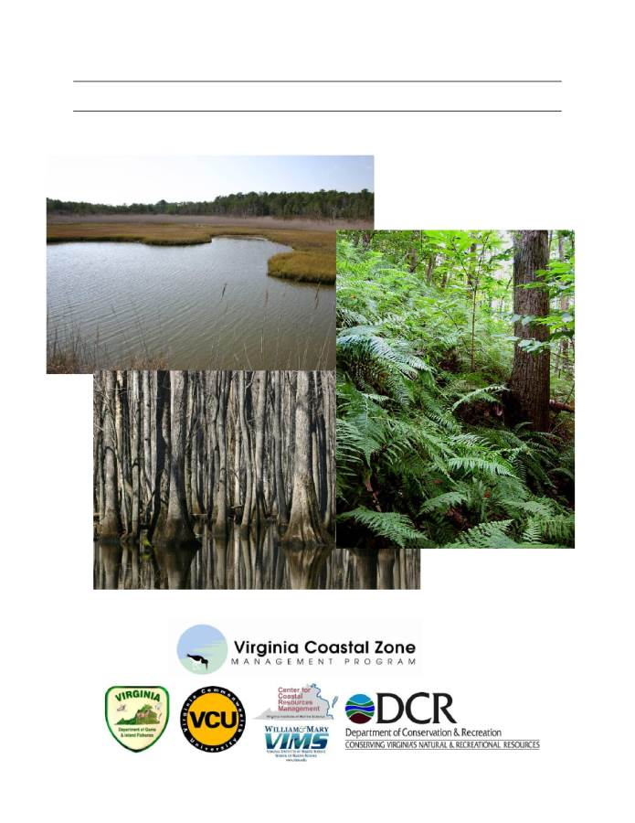
The Coastal Virginia Ecological Value Assessment: a collaborative integration of conservation
datasets and priorities in Virginia
ii
The Coastal Virginia Ecological Value Assessment: a collaborative integration of conservation
datasets and priorities in Virginia
This project was funded in part by the Virginia Coastal Zone Management Program at the Department of
Environmental Quality through grant number NA10NOS4190205 of the U.S. Department of Commerce,
National Oceanic and Atmospheric Administration, under the Coastal Zone Management act of 1972, as
amended.
Prepared by:
Virginia Coastal Zone Management Program
Virginia Commonwealth University- Center for Environmental Studies
Virginia Department of Conservation and Recreation- Division of Natural Heritage
Virginia Department of Game and Inland Fisheries
Virginia Institute of Marine Science- Center for Coastal Resource Management
Coastal Zone Management Program
Virginia Department of Environmental Quality
Division of Environmental Enhancement
629 East Main Street
Richmond, Virginia 23219
Fax: (804) 698-4319
Cover images courtesy of Irvine Wilson (Magothy Bay Natural Area Preserve- top, Dendron Swamp
Natural Area Preserve-
bottom) and Gary Fleming (Crow’s Nest Natural Area Preserve-right), Virginia
Department of Conservation and Recreation- Division of Natural Heritage.
This document may be cited as:
Virginia Coastal Zone Management Program. 2013. The Coastal Virginia Ecological Value Assessment: a
collaborative integration of conservation datasets and priorities in Virginia. Richmond, Virginia.
iii
Executive Summary
The Coastal Virginia Ecological Value Assessment (VEVA) was developed to be a comprehensive, GIS-
based tool to guide the land use planning and conservation planning of local governments and planning
districts in the Coastal Zone of Virginia. Funded primarily by the Coastal Zone Management Program
(CZM) at the Virginia Department of Environmental Quality (NOAA grant FY10 NA10NOS4192025, Task
11), the Coastal VEVA improves upon, and replaces, the former Priority Conservation Areas (PCA) data
layer. The PCA was developed in 2008 by Virginia’s Department of Conservation and Recreation-Division
of Natural Heritage, Department of Game and Inland Fisheries, and Virginia Commonwealth University-
Center for Environmental Studies (NOAA grant FY08 NAO8NOS4190466, Task 11.02). These partners
integrated datasets identifying priority lands based on wildlife habitat and biodiversity values, landscape
level Green Infrastructure networks and healthy waters in the Coastal Zone. In 2010, these same state
partners were joined by DCR-Division of Soil and Water and Virginia Institute of Marine Science-Center
for Coastal Resources Management to develop an update and enhancement of the PCA. This consisted
of updates to datasets previously included in the PCA, as appropriate, the inclusion of coastal and
estuarine priority conservation areas (VIMS), and the inclusion of Virginia’s Healthy Watersheds, as
identified by VCU-Center for Environmental Studies. Three deliverables were produced in accordance
with the project grant requirements and are provided within this report: 1) A final Coastal VEVA Map
displaying the revised dataset (page 21). 2) An updated NOAA Coastal and Estuarine Land Conservation
Program (CELCP) Land Acquisition Priorities Map (page 22), and 3) Outreach activities involving the
creation and delivery of educational materials, outlined in the last section of this report (page 24).
Coastal VEVA synthesizes important natural resource information in one geospatial layer for guiding
conservation planning, natural resource management, land use management and public awareness of
the general ecological values of areas throughout the Coastal Zone. VEVA combines scientific data and
best professional judgment to rank terrestrial and aquatic areas on a 1-to-5 scale of ecological value.
This dataset is not intended to replace on the ground surveys or consultations with biologists as
appropriate, but is intended to be a thorough first step to enable efficient consideration of natural
resources and ecosystem function early in any planning process. This report provides a description of
the datasets that provided the inputs to the Coastal VEVA, as well as methods for its development using
ArcGIS. Furthermore, examples are provided as to how the output GIS layers can be used in a local
context, and how local data can be incorporated with the Coastal VEVA, for making decisions around
land use and conservation.
iv
Table of Contents
Introduction and Background
……………………………………………………………………………………...1
VEVA Data Inputs
………………………………………………………………………………………....…………3
Figure 1. Coastal VEVA Component O
verview……..……………………………………………………3
Terrestrial Component
– Biodiversity and Green Infrastructure…………………………………………….4
Virginia Natural Heritage Conservation Sites
– Fine Filter..…………………………………..……....4
Virginia Natural Land Network
– Coarse Filter…………………………………………….……………4
Figure 2. Natural Land Network for the Virginia Coastal Zone
…………………………..................…6
Terrestrial Component
–Wildlife Diversity ……………………………………...…………………….…….…7
Priority Wildlife Diversity Conservation Areas …………………………..………………………………7
Table 1. Prioritization Scheme for Confirmed and Potential DG
IF Resources………………............9
Figure 3. Priority Wildlife Diversity Conservation Areas for the Virginia Coastal Zone
……………..12
Aquatic Component…………………………………………………………………………...………….…….13
VCU
– Aquatic Resource Integrity Layer………………………………………….…….……….…….13
Figure 4. Aquatic Resource Integrity Layer
………….....................................................................15
Estuarine Component…………………………………………………………………..……………….……..16
Aquatic Priority Conservation Areas (APCA)
……………….…………………………….….….…….16
Table 2. Data layers and sources used to develop the APCA
…………………………………….…..16
Table 3. Summary of ecological value scores for APCA input datasets
……………………………..17
Table 4. Subset of 9 coastal and estuarine resources selected for inclusion in the Coastal
VEVA ………………………………………………………………………………………………….........18
Figure 5. Revised VIMS Aquatic Priority Conservation Areas in the Virginia
Coastal Zone……….19
Combining Input Data Layers to Create the Coastal Virginia Ecological Value Assessment
…………...…20
Figure 6. Coastal Virginia Ecological Value Assessment Map
………………………………………..21
Figure 7.
NOAA CELCP Land Acquisition Priorities Map……………………………………..………22
Outreach
…………………………………………………………………………………………………...………..24
Educational materials
……………………………….…………………………………………………….……24
Use Constraints…………………………………………………………………………………………………25
Use Case Examples for Integrating Coastal VEVA into Local Land Use Planning
………………….….26
Delivery
……………………………………………………………………………………………………….….31
References
………………………………………………………………………………………………….……….33
Appendix A. Survey Summary
……………………………………………………………….…………………...34
Appendix B.
Handout………………………………………………………………………………...…………….63
Appendix C. Coa
stal VEVA Factsheet…………………………………………………………………………...64
Appendix D. User Friendly Metadata……………………………………………………………………………..66
Appendix E. Presentation slides for Coastal PDC Meeting and Environment Virginia Symposium…...….68
Appendix F. Poster Presentation Materials for the York River Symposium................................................69
Appendix G. Materials for Virginia GIS Conference....................................................................................75
Appendix H. Map produced for National Park Service John Smith Trail Discussion..................................81
Appendix I. Materials for the February CBNERRVA Blue-Green Infrastructure Workshop........................82
Appendix J. Materials for the September CBNERRVA Blue-Green Infrastructure Workshop....................90
1
Introduction and Background
Habitat loss, fragmentation, and degradation represent the most significant threats to the effective
conservation of wildlife species and natural communities. At the same time, however, the capacity to
purchase, conserve, and manage lands has diminished significantly due to declining budgets. This
problem is compounded by the rapid conversion of lands from traditional rural and agricultural uses,
which may support a broad diversity of wildlife, to industrial or residential uses, which create landscapes
inhospitable to many species and aquatic systems. This condition is especially clear in Virginia where
—
by one estimate
—current land conversion rates will develop more land over the next 40 years than has
been developed in the past 400 years (Benedict et al. 2004). Undoubtedly, habitat loss and
fragmentation cannot be stopped. Rather, the impacts must be managed proactively via well-informed,
comprehensive planning that recognizes the critical importance of conserving and managing terrestrial
and aquatic species habitats and the ecosystem functions they help constitute. This is the foundation for
healthy
―Green and Blue‖ Infrastructure.
Since most land use decisions are made at the local government level, conservation of lands is frequently
made at the local level. Considering that funding for conservation is typically very limited at the local
level, having tools to identify conservation opportunities that maximize our ability to conserve and manage
the most important areas in the most financially sound ways is key. Understanding that all
lands/resources are not equal in their contribution to a healthy functioning environment can aid planners
and citizens in deciding where to maximize their conservation potential.
Virginia natural resources agencies have independently identified important conservation opportunities
relative to their legislative missions. Specific conservation tools used for this purpose include the Virginia
Conservation Lands Needs Assessment (VCLNA) which was developed by the Virginia Department of
Conservation and Recreation
– Division of Natural Heritage (DCR-DNH) and the Virginia Wildlife Action
Plan, developed by the Virginia Department of Game and Inland Fisheries (DGIF). Both the Ecological
Model (the Virginia Natural Landscape Assessment or VaNLA) of the VCLNA and the mapped tiered-
species habitats from the Wildlife Action Plan identified conservation priorities spatially. However, each of
these efforts were formed with different objectives and assumptions and therefore, presented different
results. Concurrently, Virginia Commonwealth University’s Center for Environmental Studies (VCU-CES)
has developed methods to rate aquatic resource integrity based on fish and macro-invertebrate
community sampling and watershed health assessment modeling. The Virginia Institute of Marine
Science’s Center for Coastal Resource Management (CCRM) has developed an Aquatic Priority
Conservation Areas (APCA) data layer showing where important coastal and estuarine resources exist.
These data provide another way to identify conservation priorities. With several tools for mapping
conservation priorities, local planners need to fully evaluate all available options at the risk of under-
representing a specific conservation perspective. Synthesis is needed to present a unified method of
prioritizing conservation opportunities.
In 2008, the Virginia Coastal Zone Management Program (through NOAA Grant # NA 08NOS4190466;
FY08; Task#11.02) funded
Virginia’s DCR-DNH, DGIF, and VCU-CES to collaboratively develop the
Priority Conservation Areas (PCA) data layer and map. The PCA was an integration of DGIF’s Priority
Wildlife Diversity Conservation Areas dataset, VCU’s Aquatic Resources Integrity Layer, and DCR-DNH’s
Natural Landscape Network (a derivation of the VaNLA) and Conservation Sites layers. The PCA is a
comprehensive tool to help guide land conservation along with land use planning in Virginia’s Coastal
Zone.
Virginia CZM brought the same state entities that partnered for the PCA together again in 2010, along
with DCR-
Division of Soil and Water and VIMS’ Center for Coastal Resources Management to create a
2
more comprehensive synthesis of information for conservation planning - the Coastal Virginia Ecological
Value Assessment (Coastal VEVA) (NOAA grant FY10 NA10NOS4192025, Task 11). Coastal VEVA is a
more comprehensive tool that captures and considers current conditions in coastal and estuarine areas
as well as free flowing fresh water habitat.
The Coastal VEVA delineates several GIS conservation priority datasets including the VA Dept. of Game
and Inland Fisheries’ Priority Wildlife Diversity Conservation Areas; VA Dept. of Conservation and
Recreation Division of Natural Heritage Conservation Sites Layer (CSL) and Natural Lands Network
(NLN); VCU Center for Environmental Studies aquatic resource integrity layer; VA Dept. of Conservation
and Recreation Division of Soil and Water Healthy Waters data; and VIMS
’ CCRM Aquatic Priority
Conservation Areas (APCA). These ecological resources are defined as lands, aquatic resources and
surface waters indentified as important for conservation of Virginia's wildlife, plants, aquatic communities
and resources and natural communities. The data are ranked on a scale of 1 to 5, with a 5 representing
the highest conservation priority. Thus, the VEVA synthesizes important natural resource information in
one geospatial layer for guiding conservation planning, natural resource management, land use
management and awareness. This dataset is not intended to replace on the ground surveys or
consultations with biologists as appropriate, but is intended to be a thorough first step to enable efficient
consideration of natural resources and ecosystem function early in any planning process.
The Coastal VEVA is available online through the Virginia CZM Program’s Coastal Geospatial
Educational Mapping System (GEMS) at
http://deq.virginia.gov/coastalgems
. The VEVA data layer can
be viewed with many other data layers (such as ―conserved lands,‖ ―county boundaries,‖ ―public access
sites‖) in order to conduct additional spatial analyses.

3
VEVA Data Inputs
The following text and figures summarize the data inputs to the VEVA. In many cases, data from the
former Priority Conservation Areas analyses were used (e.g. terrestrial components from DCR-Natural
Heritage and DGIF). For the Aquatic Component, data were enhanced, and for the Estuarine component,
data we
re slightly modified from VIMS’ former Aquatic Priority Conservation Areas analysis. The
following diagram illustrates the general composition of the VEVA:
Figure 1. Coastal VEVA Component Overview. This diagram illustrates the terrestrial, aquatic and estuarine
components of the VEVA, the datasets that comprised them, and the sources of those datasets.

4
Terrestrial Component
– Biodiversity and Green Infrastructure
Virginia DCR-DNH prepared two data layers from the Natural Heritage Plan, both of which were also
included in the original PCA. These two inputs were selected to provide both a fine filter and a coarse
filter for identifying conservation priorities in Virginia. In short, coarse filter tools are designed to conserve
high percentages of species by conserving adequate diversity, distribution, and abundance of ecological
communities, ecological land units (e.g., alliances of ecological communities, physical environments and
landscape-level ecological phenomena). Coarse filter tools are complemented by fine filter approaches,
which focus on specific habitats of individual rare species, or species that specialize on a small and/or
unique habitat type.
Virginia’s Natural Heritage Conservation Sites provided the fine filter to capture lands valuable for
conservation of high biodiversity. The coarse filter consisted of the Natural Land Network, a subset of
interconnected landscape cores and corridors from the Virginia Natural Landscape Assessment (VaNLA).
The following text briefly describes these two PCA inputs.
DCR - Virginia Natural Heritage Conservation Sites (Fine Filter)
The DCR-
DNH maintains a GIS layer and database of Virginia’s Conservation Sites, a central component
of the Natural Heritage Plan. A conservation site is a planning boundary delineating the Virginia Natural
Heritage Program’s best determination of the land and water area occupied by one or more natural
heritage resources (exemplary natural communities and rare species) and required to support their long-
term survival. The size and dimensions of a conservation site are based on the habitat requirements of
the natural heritage resources present and the physical features of the surrounding landscape. Features
taken into consideration include underground and surface hydrology, slope, aspect, vegetation structure,
current land uses, and potential threats from invasive species. Conservation sites do not necessarily
preclude human activities,
but the site’s viability may be greatly influenced by human activities.
Conservation sites may require ecological management, such as invasive species control or water
management, in order to maintain or enhance their viability. Each conservation site is given a biodiversity
significance ranking (B-rank) based on rarity, quality, and number of natural heritage resources it
contains.
Biodiversity Ranks calculated for all DCR-DNH Conservation Sites in the Virginia Coastal Zone as of
January 2009 and classified from 1 (low) to 5 (high). A map of Conservation Sites used in the VEVA is
not displayed here due to sensitive nature of the data. The Virginia DCR- Division Natural Heritage can
be contacted for more information about, or for access to, the Conservation Sites database/map layer.
DCR - Virginia Natural Land Network (Coarse Filter)
The Virginia Natural Land Network is a focused subset of lands identified in the Virginia Natural
Landscape Assessment (VaNLA), a landscape-scale GIS analysis for identifying, prioritizing, and linking
natural habitats in Virginia, which was developed by the DCR-DNH with funding from the Virginia Coastal
Zone Management Program (NOAA Grant # NA05NOS4191180, Task 92.05 and NOAA Grant #
NA03NO54190104, Task 95.01). Using land cover data derived from satellite imagery, the VaNLA
identifies un-fragmented natural habitats called Ecological Cores, or large patches of natural land cover
with at least 100 acres of interior conditions. Cores consist mainly of upland forests and forested wetlands
statewide, but also marshes, beaches, and dunes in the coastal plain. Large, medium, and small
Ecological Cores are identified, along with smaller Habitat Fragments that may be important in more
urban localities. Ecological Cores provide habitat for a wide range of species, from those dependent upon
interior forests to habitat generalists, as well as species that utilize marsh, dune, and beach habitats.
5
Cores also provide benefits in terms of open space, recreation, water quality (including drinking water
protection), and carbon sequestration, along with the associated economic benefits of these functions.
All VaNLA cores are given an ecological integrity score. This score is derived from a ranking method
resulting from the calculation of several attributes from all cores
that assess a core’s relative contribution
to ecosystem functions (e.g. rare terrestrial and aquatic species locations from the State Wildlife Action
Plan (SWAP) and Natural Heritage Plan, locations of rare community types, total core area, length of core
interior streams, variety of unmodified wetlands, etc.). Via this process, each ecological core was
assigned an ecological integrity score of C1
– Outstanding to C5 – General.
In the interest of identifying an entire ecological network upon which to base conservation decisions,
landscape corridors were also identified using GIS to identify the most suitable linkages between the two
highest ranks of cores (C1 andC2). Suitable corridors that link cores allow animal movement between
cores and help to facilitate seed and pollen transfer between cores. In addition to indentifying links
between C1 and C2 cores, corridors also integrated all landscape cores that they intersected (C3, C4 and
C5 cores) as habitat nodes. These nodes provide stepping stones for plant and animal populations over
time and help to assure that lands identified as important to core linkages also contribute to the available
habitats for some species within the ecological network. More detailed methods and background for the
VaNLA can be found on the DCR-DNH website at
http://www.dcr.virginia.gov/natural_heritage/vclnavnla.shtml
Portions of the VaNLA were selected to provide the coarse filter contribution to the greater PCA.
Referred to as the Virginia Natural Land Network (NLN), this subset of lands consists of a GIS layer of:
all the highest ranked cores (C1 and C2) in the Coastal Zone, each ranked by ecological integrity,
all landscape corridors providing linkages between these cores, and
all cores (ranks C3
– C5) that intersect landscape corridors.
The NLN was provided with rankings of ecological integrity from low (1) to high (5) for incorporation into
the PCA. All cores included in the NLN maintain their same VaNLA Ecological Integrity scores for the
VEVA weighting, and all corridors were given a rank of 1 where they did not intersect a VaNLA core. The
NLN is shown in Figure 2.
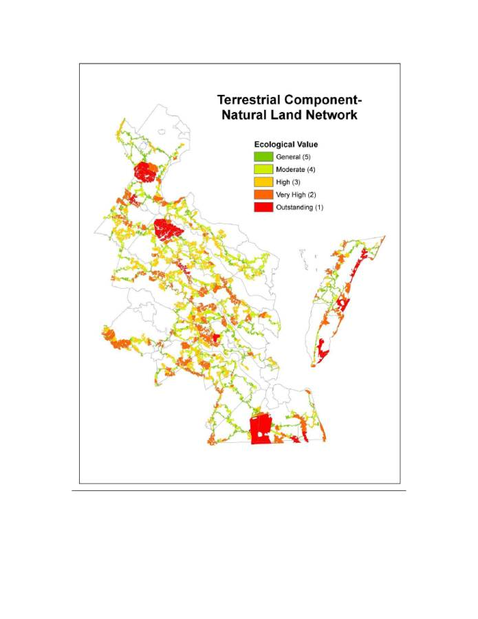
6
Figure 2. Natural Land Network for the Virginia Coastal Zone. The Natural Land Network consists of habitat
cores in the Virginia Natural Landscape Assessment (VaNLA) with Ecological Integrity values of 1-
Outstanding, or 2-Very High, as well as the corridors and nodes that provide connectivity for these highest
ranking cores. Cores are symbolized here in terms of Ecological Value, from 1- General, to 5- Outstanding.
These rankings are synonymous with the Ecological Integrity rankings in the VaNLA.

7
Terrestrial Component
– Wildlife Diversity
Wildlife Diversity was included in the VEVA via the Priority Wildlife Diversity Conservation Areas
(PWDCA) GIS layer. The PWDCA also provided the wildlife diversity input in the former PCA.
Priority Wildlife Diversity Conservation Areas
The DGIF maintains several GIS datasets showing the location of important wildlife features. However,
DGIF has never produced a map showing how these features should be prioritized and conserved. As
part of the Wildlife Action Plan, DGIF mapped habitats of over 250 species of greatest conservation need
(Tiered Habitat); these do not include any protective buffer around habitats. Furthermore, there are
general conservation actions included in the Wildlife Action Plan that benefit multiple species that had not
been mapped. Therefore, it was necessary to create a new GIS dataset to compile wildlife conservation
areas. This dataset was called Priority Wildlife Diversity Conservation Areas or PWDCA. The term
diversity was included to reinforce the wildlife diversity or nongame wildlife conservation focus.
The first step was to determine appropriate existing GIS datasets that represent conservation
opportunities. These datasets included: Anadromous Fish Use Waters, Colonial Waterbird Database,
and Audubon Important Bird Areas. The DGIF’s Coldwater Stream Survey dataset was also considered,
but is primarily outside of the Coastal Zone.
The next step was to gather ―mappable‖ conservation actions outlined in the Wildlife Action Plan. There
were four explicit conservation actions that could be mapped:
1. Acquire or protect needed habitats. The DGIF mapped the habitats of over 250 species
of greatest conservation need within the top two tiers of imperilment, plus any state or
federally listed species in a lower tier. These are called DGIF’s Tiered Species Habitat.
While this doesn’t include the habitats needed to conserve all species of greatest
conservation need, it does include a major portion of the most critically imperiled species.
2. Protect large blocks of contiguous habitat. The DCR-DNH identified cores of natural land
cover within the Ecological Model of their VCLNA. These cores and related features
represent contiguous or unfragmented habitat. These are also referred to as the VaNLA
cores.
3. Create forest or upland buffers around marshes and protect wooded wetlands. Wetlands
are identified in the U.S. F
ish and Wildlife Service’s (USFWS) National Wetlands
Inventory. Buffers can be created in GIS to identify buffers around these features.
4. Protect and establish riparian buffers. GIS data on streams can be buffered to delineate
appropriate stream buffers. The best available stream data are the National Hydrography
Dataset from U.S. Geological Survey (USGS).
Details on the existing GIS datasets, as well as datasets used to map conservation actions, are listed
below:
Anadromous Fish Use Waters: This dataset maintained by DGIF and updated in 2006 identifies reaches
that are confirmed or potential migration pathways, spawning grounds, or nursery areas for anadromous
fish. The base layer hydrography for this dataset is the USGS National Hydrography Dataset, High
(1:24,000) and Medium (1:100,000) resolution.
Colonial Waterbird Database: This dataset contains known occurrences of colony nesting waterbirds in
Virginia (for example, Least Tern (Sternula antillarum), and Royal Tern (Thalasseus maximus). It
8
includ
es data from the 2003 Colonial Waterbird survey conducted by the College of William and Mary’s
Center for Conservation Biology (CCB), data from the DGIF’s Species Observations database and data
from Cornell University.
Audubon Important Bird Areas (IBA): This IBA dataset consists of 20 IBAs in the Coastal Zone. It was
created by the Center for Conservation Biology with funding from the Virginia CZM Program and is
maintained by the Audubon Society as part of a global effort to conserve bird biodiversity. They are
created to encompass habitat important to one or more species and are based on nominations from
experts in the avian community.
DGIF’s Tiered Species Habitat: Aquatic and terrestrial tiered confirmed and potential habitat layers were
created as part of the Virginia Wildlife Action Plan. There are four tiers, representing levels of imperilment
with I being the highest. All maps and information were reviewed by biologists. For more information,
visit:
http://bewild.virginia.org
.
Terrestrial confirmed habitat: This layer includes confirmed locations from DGIF’s Species
Observations database as well as data from DCR-DNH's Biotics Data System.
Terrestrial potential habitat: This layer represents areas with potential for supporting species. It
is based on species distribution, species habitat requirements, existing spatial data and biologists’
knowledge.
Aquatic habitat: The aquatic layers are based on a Stream Reach Classification System using
the 1:100,000 National Hydrography Dataset (NHD). Reaches in this dataset were assigned
additional attributes useful for habitat evaluation such as size, gradient and elevation.
o Confirmed habitat: Confirmed reaches have documented species occurrences.
o Potential habitat: Potential reaches are assigned based on species distribution and the
characteristics of confirmed reaches.
Note that the DGIF’s Threatened and Endangered Species Waters dataset is essentially a subset of the
aquatic habitat portion of the Tiered Species Habitat, for those individual listed species. Therefore this
dataset was not included on its own.
National Wetlands Inventory: This dataset is maintained and downloaded from the USFWS. It was
digitized from 1:24,000 topographic quads and attributed using the Cowardin Wetland Classification
System.
National Hydrography Dataset: This dataset is maintained and downloaded from the U.S. Geologic
Survey. The layer used to extract riparian areas was at the 1:100,000 scale.
VaNLA Cores: Layer created and distributed by the DCR-DNH for the Virginia Conservation Lands
Needs Assessment, as part of the Virginia Natural Lands Network. It was published in 2006 and
represents areas of un-fragmented natural habitat ranging in size and corresponding conservation value.
Unique terrestrial and aquatic areas: This layer includes areas that represent particularly important
habitats for ten species that merited additional priority. The species included Canebrake rattlesnake, Bog
turtle, Shortnose sturgeo
n, American oystercatcher, Wood turtle, Mabee’s salamander, Eastern Tiger
salamander, Bald eagle, Peregrine falcon and the Barking treefrog.
Once the initial GIS input layers were gathered, it was necessary to determine how they should be
processed and prioritized. The list of relevant layers and habitat features was sent to 13 DGIF Wildlife
Diversity biologists and broad questions were posed including: What areas in Virginia should be
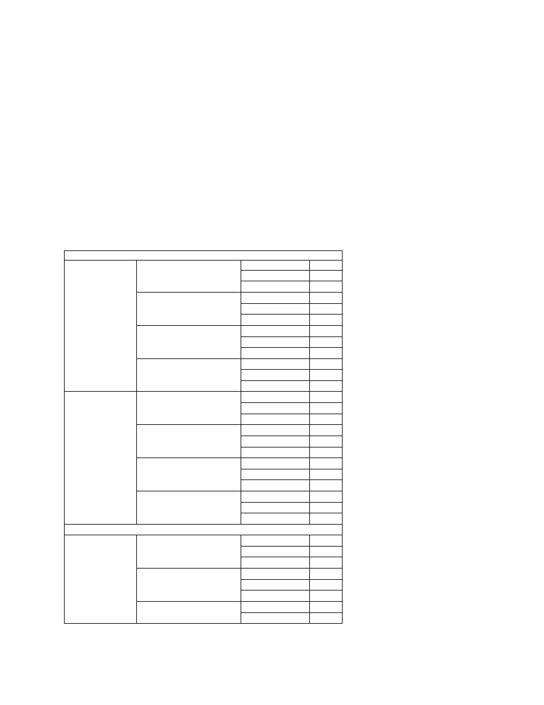
9
preserved?; What are the priorities that should be managed in a specific way?; What areas should
localities protect through local zoning or planning?; How should the Wildlife Diversity section prioritize
land for acquisition? The biologists reviewed the list of mapped wildlife features, suggesting priorities for
features, buffer distances and buffer priorities where appropriate. Priorities were on a scale of 1 to 10,
with 10 being the highest. In addition, biologists identified any other features that should be included in
the model. Specific areas were identified as having additional value as being unique terrestrial or aquatic
features.
Input was received from all 13 biologists. The results of this survey were averaged. However, input from
those biologists with specific taxonomic expertise was considered more appropriate than similar input
from non-experts for individual taxa features. For example, avian biologists determined the priority
rankings of Important Bird Areas and tiered bird species habitats while aquatic biologists had more input
on riparian buffer rankings. Initial input was compiled and draft buffer distances and priorities were
determined. A second round of input on these draft results followed. After feedback on the draft values
was received and incorporated, final values were determined (Table 1).
Table 1. Prioritization Scheme for Confirmed and Potential DGIF Resources
Aquatic Tiered Habitat
1
Confirmed
(DGIF)
Tier I spp reach
Priority
10
Buffer
300
Buffer priority
10
Tier II spp reach
Priority
9
Buffer
300
Buffer priority
9
Tier III spp reach
Priority
7
Buffer
300
Buffer priority
7
Tier IV spp reach
Priority
5
Buffer
300
Buffer priority
5
Potential
(DGIF)
Tier I spp reach
Priority
7
Buffer
150
Buffer priority
7
Tier II spp reach
Priority
6
Buffer
150
Buffer priority
6
Tier III spp reach
Priority
4
Buffer
150
Buffer priority
4
Tier IV spp reach
Priority
3
Buffer
150
Buffer priority
3
Terrestrial Tiered Habitat
1
Confirmed
(DGIF includes
data from DCR-
DNH)
Tier I spp location
Priority
2
10
Buffer
200
Buffer priority
10
Tier II spp location
Priority
2
9
Buffer
200
Buffer priority
9
Tier III spp location
Priority
2
7
Buffer
200

10
Buffer priority
7
Tier IV spp location
Priority
2
5
Buffer
200
Buffer priority
5
Potential
(DGIF)
Tier I spp habitat
Priority
8
Buffer
100
Buffer priority
8
Tier II spp habitat
Priority
6
Buffer
100
Buffer priority
6
Tier III spp habitat
Priority
4
Buffer
100
Buffer priority
4
Tier IV spp habitat
Priority
3
Buffer
100
Buffer priority
3
Important Bird
Areas (National
Audubon Society)
Important Bird Areas
Priority
3
10, 5
Buffer Distance
0
Buffer Priority
0
CWB
(DGIF, W&M’s
Center for Cons.
Biology)
Colonial Waterbirds
Priority
8
Buffer Distance
300
Buffer Priority
8
VaNLA Cores
(DCR-DNH)
Large
Priority
5
Medium
Priority
4
Small
Priority
4
Fragments
Priority
3
National Wetlands
Inventory
(USFWS)
Wooded Wetlands
Priority
8
Buffer Distance
200
Buffer Priority
6
Non-wooded Wetlands
Priority
5
Buffer Distance
150
Buffer Priority
4
Anadromous Fish
Use Areas
(DGIF)
Confirmed
Priority
4
Buffer
100
Buffer priority
4
Potential
Priority
2
Buffer
100
Buffer priority
2
Streams
(USGS,1:100,000
NHD)
Riparian Buffers
Priority
3
Buffer
100
Buffer priority
3
Unique Terrestrial Areas
4
Priority
0.5, 1
Unique Aquatic Areas
5
Priority
1
1
Tier III and IV data is only included for Threatened and Endangered Species
2
Birds were assigned priority of 1.
3
Upper Blue Ridge IBA was assigned priority of 5, all others were 10.
4
Maple Flats, Cat Ponds, Grafton Ponds, Breaks Interstate Park, Lower Bernard Island, Halfmoon Island, Webb Island,
Parkers Island, Scarsborough Island, Finney's, Watts Island, Tangier Island, Goose Island, Clump Island, Great Fox Island
South and Northeast Naval Annex were assigned a value of 1. An area on the Lower Peninsula with Canebrake habitat was
assigned 0.5.
5
Indian Creek, Paddy Run, Johns Creek/Mill Creek, Craig Creek, and Nottoway River

11
The features, buffer distances, and priority ranks were used to combine the GIS datasets into Priority
Wildlife Diversity Conservation Areas. All geoprocessing was done using ESRI ArcGIS ArcInfo version
9.2.
First, the riparian areas were identified using line and polygon features from the NHD. The NHD identifies
several waterbody types, including rivers, lakes, ponds, seas/oceans, as well as pipelines. To focus this
analysis on actual lakes, rivers and ponds, data for sea/ocean and pipelines were removed prior to
analysis. Remaining features were buffered by 100m and assigned weights. Wetland areas were
selected from the USFWS National Wetlands Inventory Data for wooded (types EFO, PFO) and non-
wooded (types E2EM, E2SS, PSS, PEM and PUB) areas. Wetland polygons were buffered
appropriately. Riparian and wooded polygons were joined and dissolved resulting on the maximum value
for each polygon.
Important Bird Areas were not altered from original dataset; weights were assigned accordingly.
Anadromous fish areas were buffered (according to the distances in the above table) for both confirmed
and potential. Data were joined and dissolved on maximum value where areas overlapped.
VaNLA Cores from DCR-DNH were not altered, only assigned weights.
Unique terrestrial areas were selected from DCR-
DNH’s Conservation Lands layer, and from DCR’s
Jurisdictions layer. Unique terrestrial areas also include areas delineated by DGIF Biologists to denote
remaining potential habitat for certain wildlife species (e.g. inclusion of areas on the Lower James
representing suitable Canebrake rattlesnake habitat). Unique aquatic layers were selected from the
NHD.
For terrestrial and aquatic tiered data, confirmed and potential locations were buffered and assigned
weights according to tier. Layers were joined to identify areas of overlap. Data were imported into MS
Access where duplicate species were removed and final weights were calculated for each polygon. Final
weight was calculated as the highest weight, plus half the total of the additional weights in each polygon.
Because Tiered Species Habitats had such a high priority, there was a danger of these data
overshadowing other wildlife features. The use of highest species weight plus half the weights of
additional species occurring at the same location reduced the overall influence of sites where several
tiered species co-occur.
All layers were compiled and converted from vector polygons to a raster dataset according to final weight.
The raster layers were summed to get a total score for all locations. Using the Standard Deviations
classification method, the combined raster was broken into 5 categories, with 1 being lower priority and 5
being the highest conservation priority.
The input layers and draft PWDCA with the 1-5 categories were posted in an intranet map site, providing
an opportunity for final review by DGIF biologists. The final PWDCA is shown in Figure 3.
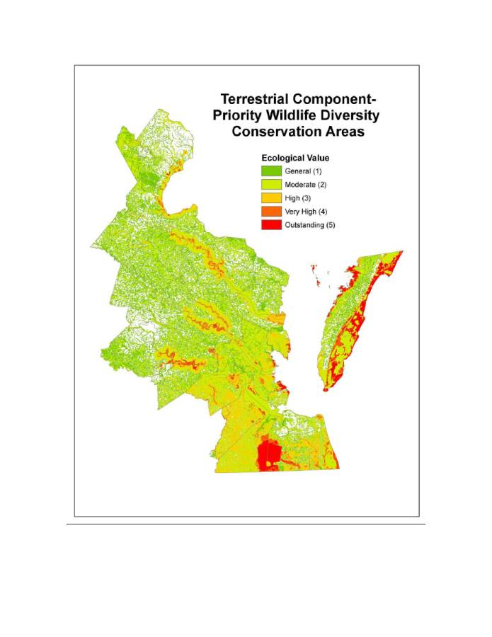
12
Figure 3. The DGIF Priority Wildlife Diversity Conservation Areas provides the Wildlife Diversity input for the
Terrestrial Component of the VEVA.. This layer was also used in the PCA. Here the PWDCA is symbolized
from 1-General to 5-Outstanding Ecological Value.
13
Aquatic Component
The stream reach assessment used for the PCA was updated for use in the VEVA. For the VEVA an
additional Healthy Waters watershed analysis was conducted. These two analyses provided the aquatic
component of the VEVA, where ―aquatic‖ can be defined as tidal and non-tidal freshwater streams and
rivers throughout the Coastal Zone.
VCU
– Aquatic Resource Integrity Layer
This layer was created by Virginia Commonwealth University Center for Environmental Studies (VCU-
CES) to aid in the characterization of stream health in the Commonwealth. This layer is a combination of
both a local scale assessment and a watershed based approach to stream health. The assessment was
aided by the Interactive Stream Assessment Resource (INSTAR).
Stream Reach Assessment:
Within each geo-referenced stream reach (150-200m, depending on stream width), fishes,
macroinvertebrates, and stream habitat data were collected. Data were compiled into databases and
application macros calculated over 50 separate ecological metrics, including those typically generated for
Index of Biotic Integrity (IBI) and Rapid Bioassessment Protocol (RBP) assessments. INSTAR evaluates
the ecological health of stream reaches based on percent comparability of empirical data to the
appropriate (e.g., basin, stream order) reference model. A Virtual Stream Assessment (VSA) score
representing stream health is calculated and placed in one of four categories: Exceptional, Healthy,
Restoration Potential, and Compromised.
In addition to extensive stream community data collected by VCU biologists for INSTAR, appropriate data
from other sources (e.g., agencies, universities) were screened for inclusion in the database, based on
stringent criteria.
Modified Index of Biotic Integrity Watershed Assessment:
Watershed assessments included a broader range of validated qualitative (e.g., species lists) biotic data
from various sources, including state and federal agencies. These data were used to generate watershed
health scores
using six metrics or variables for the Commonwealth’s 1275 6
th
order watersheds.
Watershed integrity was calculated for each hydrologic unit and ranked in one of four categories:
Exceptional, Healthy, Restoration Potential, and Compromised.
Healthy Waters Watershed:
Virginia’s Healthy Waters initiative is an effort to broaden conservation efforts to protect streams, creeks
and other waters before they become impaired. Healthy waters are identified using the INSTAR
database. Healthy INSTAR sites are sites that have a Virtual Stream Assessment Score greater than 70
(More information on Healthy Waters is available online at
http://instar.vcu.edu/
). At each healthy waters
site, a watershed was generated using the Hydrologic Tools in Spatial Analyst. Each watershed was
attributed with the stream health score of the INSTAR site for which the watershed was generated.
Layer creation:
All 1:24,000 hydrology lines in the Commonwealth were rasterized to 30m pixels and the watershed
health score was attributed on each pixel that was inside a watershed. The stream reaches were
buffered and rasterized.
The buffered NHD data were attributed with the Healthy Waters watershed rank of 5 for Exceptional or 4
for Healthy where data exist.

14
The Aquatic Resource Integrity Layer was then created by merging the Healthy Waters watershed
assessment with the MIBI watershed assessment layer. A Mosaic operation using the last option was
used to combine the two layers. The Aquatic Resource Integrity Layer with health categories is shown in
Figure 4.
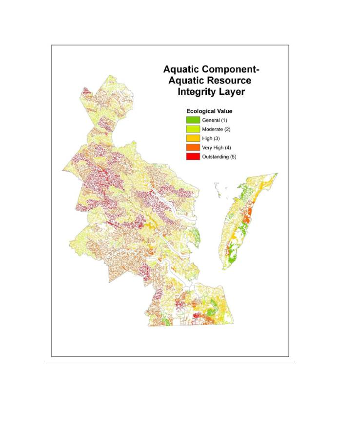
15
Figure 4. Aquatic Resource Integrity Layer. This Aquatic Component to the VEVA was developed from a
stream reach
– and watershed- level GIS analyses. This component includes tidal and nontidal freshwater
streams and rivers, where stream reaches are ranked 1-General to 5-Outstanding in Ecological Value.
16
Estuarine Component- Blue Infrastructure
The VEVA goes beyond the aquatic extent of the PCA, and includes estuarine resources as well. Where
the Aquatic Component provided by VCU focuses on the freshwater tidal and non-tidal systems, the
Estuarine Component includes additional ecologically valuable areas in systems of higher salinity. This
Estuarine Component was provided by a modification to the Aquatic Priority Conservation Areas GIS
layer, developed by VIMS and funded by the Virginia CZM Program. The Virginia CZM Program funded
the first work to map Virginia’s Blue Infrastructure (NA03NOS4190104 Task 95.02 as well as three follow-
on efforts to prioritize those resources, leading up to the APCA (NA07NOS4190178 Task 93.04;
NA07NOS4190178 Task 96.01; and NA08NOS4190466 Task 11.03).
VIMS - Aquatic Priority Conservation Areas (APCA)
The Aquatic Priority Conservation Areas (APCA) assessment developed by VIMS was accomplished in
two steps. First, an Aquatic Cumulative Resource Assessment (ACRA) was performed to determine
resource richness. The ACRA was developed using 17 different layers from various agencies. These
included several already discussed above (see Table 2 below), as well as nine unique datasets found
only in the estuarine portion of the coastal zone.
Table 2. Data layers and sources used to develop the APCA
Dataset
Originator
Colonial Waterbird Database
Center for Conservation Biology, William and Mary
Audubon Important Bird Areas
VA Department of Game and Inland Fisheries
Shellfish Suitability
VIMS CCRM
Reef Restoration Sites
Virginia Marine Resources Commission (VMRC)/VIMS CCRM
Oyster Reefs
VMRC/VIMS Eastern Shore Lab/ CCRM
Artificial Fishing Reef
VMRC
Wetlands (2009)
National Wetlands Inventory, US Fish and Wildlife
Sand/Mud Flats (2009)
National Wetlands Inventory, US Fish and Wildlife
Seed Areas
VMRC/VIMS CCRM
Aquaculture Sites
VMRC/VIMS CCRM
Turtle Nest
NOAA Environmental Sensitivity Index Atlas
SAV (1999
– 2008)
VIMS Submerged Aquatic Vegetation Program
Aquatic Confirmed Habitat
VA Department of Game and Inland Fisheries
Aquatic Resource Integrity Layer
Center for Environmental Studies/VCU
Stream Conservation Areas
VA Department of Conservation and Recreation
Threatened & Endangered Waters VA Department of Game and Inland Fisheries
Regulated Areas
VMRC/VIMS CCRM
Corresponding shapefiles associated with each data layer were converted to raster with a cell size of
30m. Most data sets contained large areas of no data values. To standardize the extent of each layer the
―no data‖ values were set to "0," and each raster was merged with the study area boundary specifying the
resulting raster would retain the maximum cell value on each overlapping cell.
Since this was a study directed at identifying resource rich areas, datasets which included density values,
numerical counts, or valuations were reviewed and selective attributes were used in the ACRA. The
outcome of this process eliminated resource poor areas defined by the independent datasets. Therefore
low density areas or regions void of a specific resource were eliminated from the analysis.

17
The second phase of the project ranked the various resources for their ecological value. This ranking, or
valuation analysis, coded each data raster with a value based on best professional judgment and
scientific knowledge. The classes assigned to the APCA and their corresponding values are: exceptional
habitat value =3; very high habitat value=2; good habitat value=1. The protocols established for the first
part of the analysis (ACRA) already removed those areas of lower ecological value. Table 3 summarizes
the rankings for all the resources considered.
Table 3. Summary of ecological value scores for APCA input datasets:
LAYER
SCORE
1) ColonialWaterbirdDatabase
3
2) AudubonImportantBirdAreas
2
3) ShellfishSuitability
2
4) ReefRestorationSites
3
5) OysterReefs
3
6) ArtificialFishingReef
1
7) Wetlands(2009NWI)
3
8) Sand/MudFlats(from2009NWI)
2
9) SeedAreas
1
10) Aquaculturesites
2
11) TurtleNest
3
12) SAV(1999
–2008)
3
13) AquaticConfirmedHabitat
3
14) VCUAquaticResourceIntegrity
3
15) StreamConservationAreas
2
16) Threatened&EndangeredWaters
3
17) RegulatedAreas
1
Using the ArcMap® tool set ―Mosaic to New Raster Tool (Mosaic Method: Maximum),‖ rasters were
superimposed and combined by cell (30m cell size). Using this technique, the output raster retains the
maximum cell value on each overlapping cell. Therefore a cell with only one resource that has a score
value of 3 is not outweighed by a cell with 4 resources with values of 1 each. Finally, this raster set was
divided into 3 categories (excluding 0) to reflect the proposed classification.
Integration of Estuarine Component into Original PCA
To integrate the APCA into the original PCA the above classification was re-viewed and re-assessed to
comply with the 5-level priority classification used in Priority Conservation Areas model. Nine unique
aquatic layers were
introduced through the VIMS assessment not previously considered in the state’s
PCA model. These nine layers were re-classified and integrated into the new VEVA model as
summarized in Table 4 and mapped in Figure 5.
18
Table 4. Subset of 9 coastal and estuarine resources selected for inclusion in the Coastal VEVA
.
Data sets to be integrated
SCORES
Original/Integrated
3) Shellfish Suitability
2/4
4) Reef Restoration Sites
3/5
5) Oyster Reefs
3/5
6) Artificial Fishing Reef
1/3
9) Seed Areas
1/3
10) Aquaculture sites
2/4
11) Turtle Nest
3/5
12) SAV (1999
– 2008)
3/5
17) Regulated Areas
1/3
Since the VIMS assessment eliminates regions which are ―resource poor‖ the lower end of the DGIF
classification is not represented. At this time, no attempt will be made to re-introduce these areas into the
APCA as sites for future conservation.
For the final integration, these 9 rasters were resampled (100m cell size), and combined using the
ArcMap® tool set ―Mosaic to New Raster Tool― (Mosaic Method: Maximum).
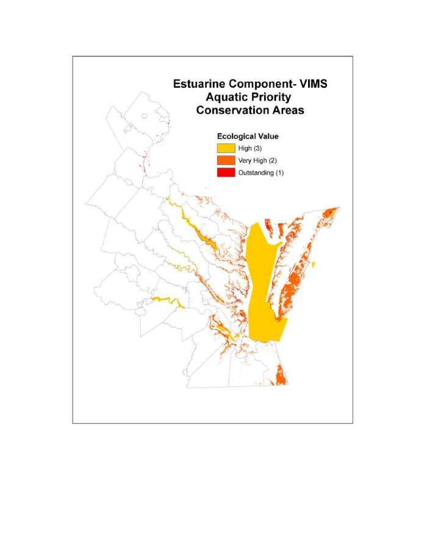
19
Figure 5. Estuarine Component. Relative to the VEVA Aquatic Component, this component includes waters
that are, or are associated with, estuarine and/or high salinity systems. The estuarine component was
developed from a re-
analysis of VIMS’ Aquatic Priority Conservation Areas. This analysis focused only on
es
tuarine resources of at least a “high” ranking of ecological value, and sought to minimize overlap with
other VEVA input datasets. Areas included in the estuarine component are ranked 3-High to 5-Outstanding
in Ecological Value.
20
Combining Input Data Layers to Create the Coastal Virginia Ecological Value Assessment (VEVA)
VEVA Data Layer
All data were resampled to 100 meter cell size, where 1 cell represents a 100 meter by 100 meter area on
the ground. The DGIF PWDCA layer, DNH natural land network and conservation sites, and VCU-CES
aquatic resource integrity layer were combined using cell statistics, where the maximum value cell is
output to a new data layer. A majority filter (majority, 4 neighbors) was run on the new PCA data layer to
smooth the data and remove noise in the dataset. See Figure 6 for a finalized Coastal VEVA map
(project deliverable #1).
Adaptation of Coastal VEVA into CELCP Land Acquisition Priorities Map
Administered by NOAA’s Office of Coastal Resource Management, the Coastal and Estuarine Land
Conservation Program (CELCP) provides funding for the acquisition,conservation and management of
coastal and estuarine lands with significant ecological value,. A separate Coastal VEVA map was
generated to be a tool for the CELCP to strategically identify the most ecologically significant resource
areas in coastal Virginia. Figure 7 displays the CELCP Land Acquisition Priorities Map (project
deliverable #2),
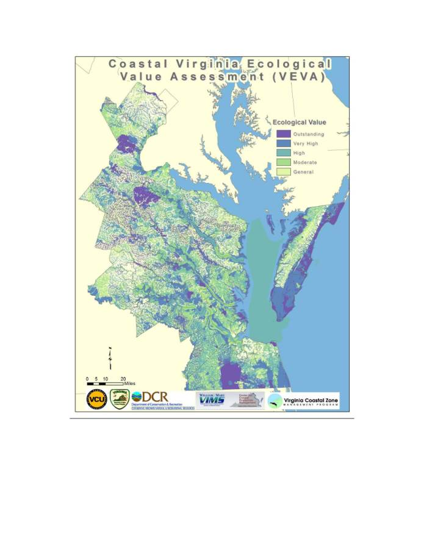
21
Figure 6. Coastal Virginia Ecological Value Assessment. This map (project deliverable #1) was developed
from the integration of terrestrial (datasets from DGIF and DCR), aquatic (datasets from VCU), and estuarine
components (VIMS dataset). In all cases, input datasets entered the VEVA analysis with pre-existing weights
applied to lands and/or waters by the partner that developed the data input. In cases of overlap, the highest
value given to any particular land/water was retained for the final map. Thus, all lands and waters in the
VEVA display their highest ranking as per input datasets and partner expertise. All lands and waters are
ranked from an Ecological Value of 1
– General to 5 – Outstanding.
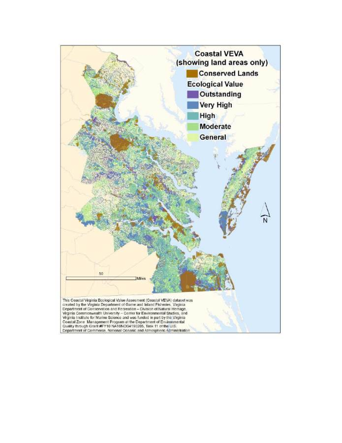
22
Figure 7. NOAA CELCP Land Acquisition Priorities Map (with conserved lands). The Coastal VEVA identifies
the ecological value (i.e. Green and Blue Infrastructure) of
Virginia’s terrestrial and aquatic areas to guide
conservation planning, As such, the VEVA was used to derive a separate CELCP Land Conservation
Priorities Map (project deliverable #2) which highlights unconserved land area to further refine acquisition
prioritization. CELCP conservation opportunities lands are ranked from 1- General Opportunity to 5-
Outstanding Opportunity.
23
VEVA Input Layer Attribute Table
The VEVA data layer is attributed with an ID field, a Rank field and a TableID field. The end user is not
readily able to see which input layers are represented by the VEVA polygon entity. A table was
generated by unioning all the input data layers in GIS then attributing the table to show for each VEVA
polygon, what input layer is present at that particular polygon. The table generated is called
VEVA_InputLayer_Presence and is available in DBF format (dbase IV), xls format (97 Excel) and xlsx
format (2007 Excel). The table contains the following fields:
TableID: Unique ID used to join or relate back to the VEVA.shp attribute table (a TableID field is
present in the VEVA.shp)
AQUATIC: A field attributed with a Y or NA. A Y indicates an entity from VCU-
CES’s Aquatic
Resource Integrity layer is present within the VEVA polygon. An NA indicates that at the time of
model development, no aquatic elements had been identified at that particular location. An NA
does not necessarily mean there are no important aquatic elements. An NA means the area may
not have an aquatic element if a survey has been conducted in the area, or, that the area may not
have been surveyed for important aquatic elements.
APCA: A field attributed with a Y or NA. A Y indicates an entity from VIMS’ CRA layer is present
within the VEVA polygon. An NA indicates that at the time of model development, no CRA
elements had been identified at that particular location. An NA does not necessarily mean there
are no important CRA elements. An NA means the area may not have a CRA element if a survey
has been conducted in the area, or, that the area may not have been surveyed for elements.
CSL: A field attributed with a Y or NA. A Y indicates an entity from DCR-
Natural Heritage’s CS
Layer is present within the VEVA polygon. An NA indicates that at the time of model
development, no conservation sites had been delineated at that particular location. An NA does
not necessarily mean there are no important conservation sites, or rare species elements upon
which conservation sites are built. An NA means the area may not have an element if a survey
has been conducted in the area, or, that the area may not have been surveyed for Natural
Heritage rare species and community elements.
NLN: A field attributed with a Y or NA. A Y indicates an entity from DCR-N
atural Heritage’s NLN
layer is present within the VEVA polygon. An NA indicates that at the time of model
development, no NLN cores and corridors had been identified at that particular location. An NA
does not necessarily mean there are no NLN components.
PWDCA: A field attributed with a Y or NA. A Y indicates an entity from the PWDCA layer is
present within the VEVA polygon. An NA indicates that at the time of model development, no
elements had been identified at that particular location. An NA does not necessarily mean there
are no elements. An NA means the area may not have an element if a survey has been
conducted in the area, or, that the area may not have been surveyed for important elements.
To work with the table and the VEVA data layer, join the table to the VEVA data layer using the TableID
field.
24
Outreach
The final component of the Coastal VEVA project(project deliverable #3) was the development and
delivery of outreach materials aimed at educating local planners and Boards of Supervisors on the update
of the original PCA (NOAA Grant # NA 08NOS4190466; FY08; Task#11.02) to the more comprehensive
and updated Coastal VEVA (NOAA grant FY10 NA10NOS4192025, Task 11). The first step of the
Outreach task took place as the Coastal VEVA analysis and mapping were still underway. This consisted
of a survey of local planners throughout the Coastal Zone, to gauge the awareness and use of the PCA
and other state conservation and land use planning tools and datasets. Results from this survey would
help direct the most effective communication of the distinctions between the VEVA and PCA, so that
outreach efforts would effectively promote and support local use of the Coastal VEVA.
Survey results were summarized and analyzed to focus outreach activities and materials development on
the most relevant current interests and needs of local governments and planning staff. To address issues
raised in survey responses, outreach focus was placed on relaying an understanding of the meaning of
Coastal VEVA data inputs; the importance of these inputs to local planning; and how the VEVA outputs
can be used to guide local land use decisions and land conservation. Survey questions and results are
summarized in Appendix A.
Educational materials are described below, followed by a summary of meetings, conferences, and
workshops at which Coastal VEVA has been presented. Corresponding materials for each outreach
event are cited and included in Appendices, as well.
Educational Materials
Coastal VEVA Maps
The final Coastal VEVA map (see Figure 6, page 21) is a key element used in outreach efforts, including
presentations, posters, handouts, etc. The consistent use of this standardized map gives Coastal VEVA a
distinctive, easily recognizable identity among current and potential users; benefits from straightforward
symbology and descriptors of ecological values (i.e. General, Moderate, etc.); and logos to represent
partner involvement and data inputs.
CELCP Map
The CELCP map refines the Coastal VEVA output map by focusing on the prioritized ecological values of
lands that may be targeted for conservation and management. This map uses symbology and format
consistent with the Coastal VEVA. Descriptors of lands (e.g. General, Moderate, etc.) can be interpreted
as rankings of opportunity, instead of overall ecological value. Moreover, the CELCP map includes
succinct details on data sources, as this map is likely to be used outside the context of the Coastal VEVA
project, and along other land conservation prioritization tools.
Handout
A handout consisting of the map, background information, and references of input data providers and
Coastal VEVA partners was
also developed. This handout, or ―leave-behind,‖ serves as a concise
reference to distribute at workshops and meetings (see Appendix B).
Data Availability
Readily available data is an integral piece of outreach; Coastal VEVA data must be accessible for users
to easily obtain and integrate into their own mapping analysis and decision-making processes. Coastal
VEVA is available for public download and also for general viewing on the following websites:
25
Download: DGIF GIS Data Website (
http://www.dgif.virginia.gov/gis/gis-data.asp
)
Viewing:
-DEQ Coastal GEMS (discussed in more detail in example
below)(
http://www.deq.virginia.gov/Programs/CoastalZoneManagement/CoastalGEMSGeospatialData.as
px
)
A factsheet was also developed for use on Coastal GEMS
LandScope Virginia Map Viewer (
http://www.landscope.org/map/?maxLong=-
74.0842&title=Coastal%20Virginia%20Ecological%20Values%20Assessment&transparency=20&baseMa
p=ST%2BSH&minLat=36.6966&themes=cus&maxLat=38.9483&customLayerGroups=390&minLong=-
79.2588&dataLayers=
)
-LandScope Chesapeake Map Viewer
(http://www.landscope.org/map/?baseMap=HYB&transparency=20&dataLayers=808&maxLat=44%2E05
19&title=Chesapeake%20Bay%20Watershed&minLat=35%2E2947&maxLong=-
71%2E6064&themes=cus&customLayerGroups=147%2C808&minLong=-83%2E977)
Succinct Factsheets and User Friendly Metadata were also developed for Coastal GEMS and
LandScope, respectively. These factsheets serve as the initial source of background information for
many users who are introduced to the Coastal VEVA via these mapping websites. The Coastal GEMS
factsheet can be viewed on Coastal GEMS (
http://128.172.160.131/gems2/
) and in Appendix C. The
LandScope User Friendly Metadata can be found in Appendix D, and at
http://www.landscope.org/virginia/map_layers/priorities/coastal_veva/24922/
.
Use Case Examples for Inte
g
rating VEVA into Local Land Use Planning
Outreach efforts were conducted not only to inform and promote the use of the Coastal VEVA but also to
support its use. In addition to the educational materials developed and presentations given, some use
case examples were created to help users envision how the Coastal VEVA can fit into existing land use
decisions and conservation planning efforts. The following summarizes Use Constraints and provides
examples of how Coastal VEVA can be applied to map-based local land use and conservation planning
situations.
Use Constraints
There are certain inherent use constraints with this geospatial model. The VEVA data layer was
developed with a specific objective to guide conservation planning at the landscape level, as well as at
the local level. To achieve a tool that is this versatile, existing statewide datasets- built from a
combination of state level and locally-pertinent data - had to be used. It is difficult to handle case by case
situations (i.e. locally specific data) when working with statewide datasets simply because the integration
of one specific case or rule for one specific area may skew the model for the remainder of the study area.
For example, optimally, it would be beneficial to remove all new development from the model; however,
data on new development does not exist in GIS format for the entire state. To use data representative of
new development in select areas would skew the final model results, because newly developed areas
that have not been digitized will not get the same treatment in the model as developed areas that have
been digitized. Thus the final model would be skewed and the output VEVA model would display different
levels of accuracy in mapping development across the Coastal Zone. Altogether, if data were not
representative of the entire study and if datasets were not complete, they were not included in the model.
It is important to remember this dataset is intended to guide conservation planning and efforts. This
dataset is not intended to replace on the ground surveys or consultations with biologists as appropriate.

26
This dataset serves as a complement to existing local data that may not already be a part of the VEVA
data layer.
The following section provides some basic tips for use of the VEVA at local scales and with additional
local data.
Scale
The VEVA data layer was derived for the Coastal Zone of Virginia. Input datasets include locally
developed, finer resolution data that were resampled to a 100 meter cell size. This resample has made
the product a coarser, smaller scale analysis. With minimal work, the VEVA layer can be refined to meet
local planning needs.
Land Use Layer Development Date
Another constraint to the VEVA data layer is the date of the land use data used for some component
development. In general, land use data used to develop the component inputs of the VEVA were either
the National Landcover Dataset (circa 2000), or the NOAA Coastal Change Analysis Program’s (CCAP)
update to the NLCD, (circa 2005). Use of local land use data more recent than this is greatly
encouraged, wherever possible, when using the VEVA for local planning efforts. Such information can be
readily incorporated into the VEVA data layer.
Local Data
The relatively coarse 100-meter resolution of the output VEVA layer was necessary for integrating several
state level datasets. Thus, the incorporation of specific local data will instantly reveal that local
information is more informative at a finer scale. Unfortunately, since each locality identifies unique
priorities in their specific area(s), there is no standard that can be applied at a statewide level to readily
identify, process and incorporate the many, varied local datasets into a state level product like the VEVA.
Typically, local data may exist for specific areas, but may not exist at the statewide level. Nonetheless,
local data can be incorporated into the VEVA layer and, VEVA can be used as an accompaniment to local
planning processes.
Use Case Examples for Integrating Coastal VEVA into Local Land Use Planning
Working with the VEVA Data Available via the Web
To aid in the planning process, the VEVA data layer may be used as a guide to identify where important
ecological areas exist. By itself, the VEVA data layer represents a valid data layer to aid local,
comprehensive, state-level and conservation planning. If one wishes to integrate additional data layers
into their use of the VEVA, the user should be aware of the input datasets used to develop VEVA. Some
local datasets might be redundant with some of the finer level data that went into the separate VEVA
components. For example, if a local government planner typically uses Anadromous Fish Use Area data
from the DGIF for their planning, using the VEVA as well would ―doublecount‖ these data, because they
were a component of t
he PWDCA (DGIF’s contribution to the VEVA). Thus one may have to cull some
data from a local analysis to avoid inappropriate redundancy of inputs.
One way of screening for this doublecounting potential would be to access the VEVA layer through
Coastal GEMS website available at
http://www.deq.virginia.gov/coastal/coastalgems.html
.
A basemap is available in Coastal GEMS which will help the planner locate areas of interest. The VEVA
and additional natural resource datasets can be viewed and queried. The end user can use Coastal
GEMS to identify priority conservation areas and see how those areas relate to the current planning
practice. The user can then print maps for use in presentations or reports.
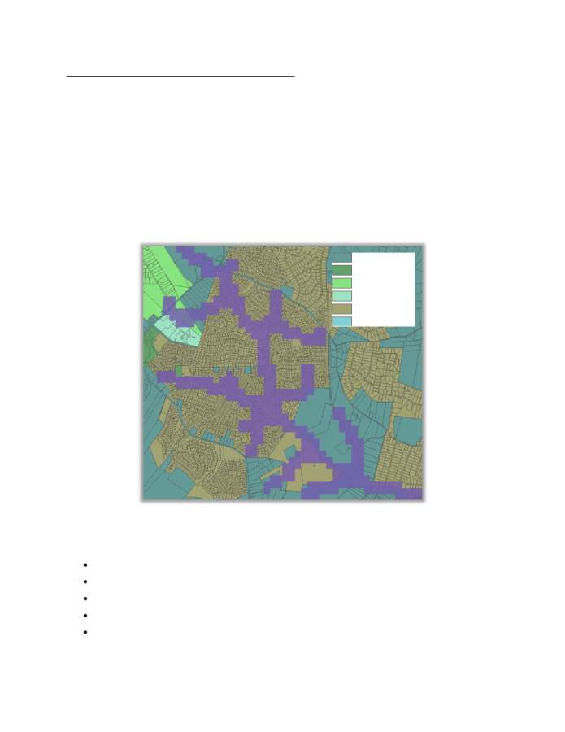
27
Working with the VEVA data in the ArcGIS Environment
The methods discussed below may be applied to incorporate more recent land use and local data with
VEVA using GIS methods. The ArcGIS environment is equipped with various tools that provide the end
user with a vast analytical working environment. There are many ways to incorporate local data into GIS
datasets and planning processes, each method unique to the specific end user.
Using VEVA to Identify Areas of Importance
As an example, with minimal effort, the end user can use the VEVA data layer to identify areas of
outstanding ecological significance for a specific area by selecting a particular VEVA rank(s). The first
step of the process would entail visually assessing high ranked VEVA areas in relation to the existing land
use to see what type of impact existing or future land use may have on the outstanding ecological areas.
For example, in the graphic below, parcels symbolized to show zoning are displayed along with the
―Outstanding‖ ecological rank from the VEVA layer overlaid (in purple):
The data can be used as part of the planning process to:
Identify areas that could be considered for open natural space value
Identify parcels that may be zoned for conservation
Identify areas for potential easements
Identify areas that would benefit most from low impact development measures
Identify areas where additional development can be focused, so that areas that can be conserved
or zoned in a compatible use to preserve ecological integrity can be zoned strategically
Agricultural District
Business Park
Industrial
Office District
Rural Conservation
Residential
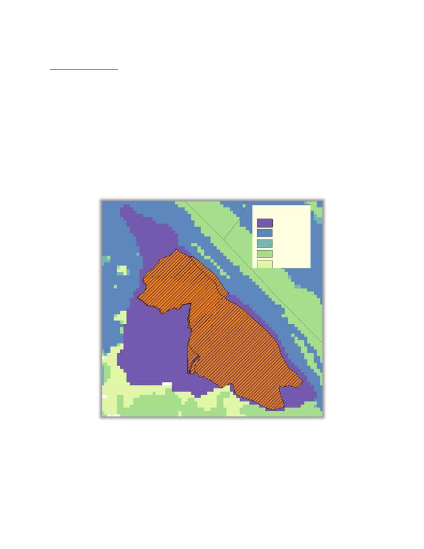
28
Integrating Local Data
Local data not included in the VEVA data layer can be added and used to adjust the value of specific
entities’ interests. The Analysis Toolset in ArcGIS provides a variety of overlay tools that can be used to
add data to the VEVA data layer and then use those local data to refine the rankings of lands and waters
in the VEVA layer.
In the following example, the VEVA polygon is considered of Outstanding ecological value. This area
may be considered outstanding based on a variety of criteria (area, contiguous forested area, wildlife
habitat, important bird migratory path, etc.). The local data (orange hatching) may indicate the
Outstanding area contains parcels slated for new development and thus should not be considered
outstanding. Perhaps this polygon rank should be lowered to Moderate, based on the expected results of
this development on the natural resource value(s) of the polygon.
The graphic below shows the VEVA data layer symbolized based on rank with the new development
overlaid in orange hatching:
The orange area can be integrated into the VEVA using an overlay (dependent on the end user needs).
In the following scenario, a union was used to combine the developed polygon with the VEVA polygon.
Once combined, the part of the VEVA that is fragmented, and no longer considered Outstanding can be
re-ranked to a Moderate rank, rather than Outstanding:
Ecological Value
Ecological Value
O u t s t a n d i n g
O u t s t a n d i n g
Ve r y H i g h
Ve r y H i g h
H i g h
H i g h
M o d e r a t e
M o d e r a t e
G e n e r a l
G e n e r a l
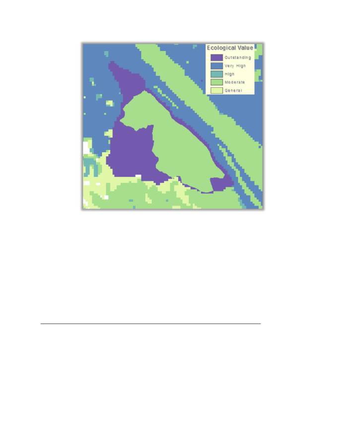
29
This same process could be used to increase the value of a VEVA polygon by simply integrating the data
that justifies such change, and editing the rank value in ArcGIS. Data can also be removed from VEVA:
local data can be overlain to identify the boundary of the pertinent area, VEVA data removed from inside
that boundary, and then local data can replace these data on the map layer.
Using the VEVA Layer to Derive a Local Model
The VEVA data layer can be used as a first step in deriving local models. Individual components of the
VEVA model can be obtained from the respective data developers (i.e. DCR-Natural Heritage, DGIF,
VIMS or VCU-CES). Once in hand locally, these data layers can be edited to include localized data, to
remove particular data, and can be ranked according to local interests. The data can then be combined
and assigned weights according to local priorities to model local ecological values, just as the VEVA was
developed to address priorities within the boundaries of the Coastal Zone.
Using the VEVA to Identify Opportunities for Green and Blue Infrastructure Conservation
Since the VEVA includes both green infrastructure (e.g. terrestrial biodiversity, wildlife diversity) and blue
infrastructure values (e.g. Healthy Watersheds, ecologically valuable estuarine resource areas), the
VEVA output map allows one to begin to visualize the benefits of comprehensive conservation planning in
one place. This is evident when viewing component VEVA datasets over the summarized VEVA output
map. For instance, the following figure includes the VEVA output map with a black shoreline, overlain
with outlines of Submerged Aquatic Vegetation (SAV) beds (a component of the VIMS APCA (see Table
3)).

30
The SAV bed density areas ranks have been classified into three categories here, where the brown
outline indicates those areas of highest density SAV beds. Areas of submerged aquatic vegetation are
known to provide a foundation for ecological function in the Bay: SAV beds provide refuge, habitat and
food for the fish and invertebrates that are critical players in the larger Bay food web. Since the presence
and health of SAV beds and their values as habitat are influenced by water quality, land uses and land
management, the VEVA map can be used to display general linkages between high value blue
infrastructure resource areas and the lands just inland from them. Based on the adjacency of these high
density SAV waters and the Outstanding-ranked lands just inland, one can begin to explore land use and
management decisions on these lands. Conservation and/or more ecologically sound management
practices on those lands could promote the expansion of those highest ranking SAV beds to surrounding
areas (i.e. deeper brown areas might expand into areas currently symbolized with orange and yellow
shades) thereby benefitting water quality and ecological value in those areas.

31
Delivery
Coastal VEVA was presented at the following events in 2011 and 2012.
Coastal Planning District Commissions Meeting (March 28, 2011)
As the Coastal VEVA analysis was being finalized, staff from the Virginia Department of Conservation
and Recreation
– Division of Natural Heritage, spoke to planners from Planning Districts throughout the
Coastal Zone, at the Richmond Regional Planning District Commission offices, in Richmond, Virginia.
This talk provided an overview of the Coastal VEVA and focused on how it would provide a more
comprehensive and up-to-date replacement for the Priority Conservation Areas product. This, the first of
presentations on the VEVA, was short but valuable as it garnered the first reactions of local partners and
users of the Coastal VEVA. Slides developed for this presentation were further developed and became
part of a much larger presentation to be used in other venues (Appendix E).
Environment Virginia Symposium (April 6, 2011)
‖The Coastal Virginia Ecological Value Assessment (VEVA)" was presented by DCR-Natural Heritage
staff at the 2011 Environment Virginia Symposium to a mixed audience of planners, environmental
scientists and state and federal natural resource representatives. Slides used in this presentation are
included in the comprehensive presentation in Appendix E.
York River Research Symposium (April 20, 2011)
An oral presentation entitled ―Coastal Virginia Ecological Value Assessment (VEVA): a conservation
planning tool for Virginia’s coastal zone― and poster were presented to a varied audience of scientists,
planners, resource and land managers and outreach specialists. This workshop was hosted by the
Chesapeake Bay National Estuarine Research Reserve in Virginia at Waterman’s Hall on the VIMS
campus in Gloucester, Virginia. Marcia Berman, the Program Manager for the Comprehensive Coastal
Inventory at the Virginia Institute of Marine Sciences, was a key partner in the Coastal VEVA project, and
made this presentation.. Appendix F provides relevant materials from this symposium.
Virginia GIS Conference (September 19, 2011)
An oral presentation entitled ―Coastal Virginia Ecological Value Assessment (VEVA): A conservation
planning tool for Virginia’s Coastal Zone‖ was presented by DCR-Natural Heritage staff, at the 2011
Virginia GIS Conference, at the Cultural Arts Center, Glen Allen, Virginia. The audience included GIS
professionals from local and state governments, as well as private organizations and consulting
companies from throughout the Virginia. Appendix G includes the presentation abstract and slides
presented.
Discussion with National Park Service (February 14, 2012)
The Virginia DCR-Natural Heritage Information Manager and Virginia CZMP Director met with John Davy,
Outdoor Recreation Planner for the National Park Service, Chesapeake Bay Program and Chair of Public
Access Planning Action Team. Discussions focused on how the Coastal VEVA can be used as guidance
in land conservation decisions pertaining to national trails planning, and specifically, the John Smith
Chesapeake National Historic Trail. Appendix H includes a map produced for the NPS-Chesapeake Bay
Program, as a follow-up to this discussion.
Blue - Green Infrastructure Workshops (February 2, 2012 and September 27, 2012)
Virginia DCR-Natural
Heritage staff presented ―The Coastal Virginia Ecological Value Assessment‖ at a
workshop
for ―Introducing Green Infrastructure for Coastal Resilience‖. This workshop was hosted by the
Chesapeake Bay Estuarine Research Reserve, on the VIMS campus in Gloucester, Virginia. This
presentation and others shared the VEVA and other Green and Blue Infrastructure planning tools to state
and local government agency staff. The agenda, attendees list and VEVA presentation slides are
provided in Appendix I.

32
This February, 2012, workshop provided high level overview of the Coastal VEVA, and was very well
received. It was decided then, that a follow-up workshop would be valuable 1) to concentrate on an
audience of planners and local government staff from the Coastal Zone, 2) to provide a more in-depth
presentation of the VEVA and its component datasets, and 3) to allow all partners in the Coastal VEVA
project to answer questions via an interactive panel discussion.
This follow-
up workshop, ―Blue and Green Infrastructure in Coastal Virginia: tools and implementation‖
was also hosted by CBNERRS at VIMS in Gloucester, on September 27, 2012. Representatives from all
Coastal VEVA partner agencies participated by presentations and on the panel. Appendix J provides the
agenda, an attendees list, and the presentations presented at this follow-up workshop.
7
th
Annual Chesapeake Watershed Forum
On September 29
th
, 2012, DCR staff conducted a 90-minute workshop at the 7
th
Annual Chesapeake
Watershed Forum, at the National Conservation Training Center in Shepherdstown, West Virginia. This
workshop used the Coastal VEVA dataset and map layer as an exemplary regional conservation planning
tool, in a hands-on workshop to familiarize participants with LandScope Chesapeake, an interactive
website developed to guide conservation efforts throughout the Chesapeake Bay watershed. Participants
included staff and volunteers from state and federal natural resource agencies, local governments and
conservation non-profits, from Virginia and Bay states.
33
References
Benedict M. A., W. Allen, E. McMahon. 2004. Advancing Strategic Conservation in the Commonwealth
of Virginia. Using a Green Infrastructure Approach to Conserving and Managing the Commonwealth's
Natural Areas, Working Landscapes, Open Space, and Other Critical Resources, The Conservation
Fund, Center for Conservation and Development, Arlington.
Bulluck, J.F., J.M. Ciminelli, and J.T. Weber, 2007. Natural Landscape Assessment and Green
Infrastructure
– Completion and Distribution: Final Report. Natural Heritage Technical Report #07-17.
Virginia Department of Conservation and Recreation, Division of Natural Heritage. Richmond, Virginia.
34
Appendix A. Survey Summary
Locality Survey of Conservation Planning Needs
Question 1
Please identify your locality:
Answer Options
Response Count
49
answered question
49
skipped question
1
Number
Response Date
Response Text
Categories
1
May 19, 2011 4:07 PM Town of West Point
5, 10
2
May 19, 2011 12:37 PM Prince William County, VA
3, 9
3
May 17, 2011 10:13 PM Prince William SWCD
3, 13
4
May 17, 2011 12:14 PM Loudoun County
3, 9
5
May 16, 2011 7:42 PM King George County
2, 9
6
May 16, 2011 12:32 PM Fairfax County
3, 9
7
May 13, 2011 2:22 PM Mathews County
5, 9
8
May 13, 2011 1:24 PM Vienna, VA
3, 10
9
May 12, 2011 7:31 PM Fairfax and Arlington
3, 9
10
May 12, 2011 6:52 PM City of Fredericksburg
2, 11
11
May 12, 2011 4:42 PM Town of Port Royal
2, 10
12
May 12, 2011 4:42 PM Northern Virginia
3, 12
13
May 12, 2011 4:10 PM County of Stafford
2, 9
14
May 12, 2011 4:10 PM County of Stafford
2, 9
15
May 12, 2011 1:20 PM northern va
3, 12
16
May 12, 2011 1:19 PM mason neck, fairfax county
3, 9
17
May 12, 2011 12:33 PM Stafford County
2, 9
18
May 12, 2011 12:04 PM Northumberland County
7, 9
19
May 12, 2011 11:57 AM Fredericksburg
2, 11
20
May 12, 2011 11:31 AM PD 16
2, 12
21
May 11, 2011 7:50 PM King and Queen County
5, 9
22
May 11, 2011 7:48 PM Westmoreland Co.
7, 9
23
May 11, 2011 6:22 PM Northumberland County
7, 9
24
May 11, 2011 6:13 PM Gloucester County
5, 9
25
May 11, 2011 5:16 PM Gloucester
5, 9
26
May 11, 2011 5:03 PM Middle Peninsula
5, 12
27
May 11, 2011 4:25 PM King William County
5, 9
28
Apr 18, 2011 6:08 PM City of Hampton
4, 11
29
Apr 13, 2011 7:22 PM Northampton County
1, 9
30
Apr 13, 2011 7:05 PM Northern Virginia
3, 12
31
Apr 12, 2011 7:44 PM Gloucester County
5, 9
32
Apr 12, 2011 11:39 AM City of Chesapeake
4, 11
33
Apr 11, 2011 9:02 PM Portsmouth VA
4, 11
35
34
Apr 11, 2011 8:15 PM Gloucester County
5, 9
35
Apr 11, 2011 7:46 PM Isle of Wight County
4, 9
36
Apr 11, 2011 6:55 PM Virginia Beach
4, 11
37
Apr 11, 2011 12:56 PM Town of Chincoteague
1, 10
38
Mar 28, 2011 4:47 PM Richmond County
7, 9
39
Mar 28, 2011 3:29 PM Northern Neck of Virginia
7, 12
40
Mar 24, 2011 12:36 PM Crater PDC
6, 12
41
Mar 23, 2011 2:57 PM
Eastern Shore of Virginia (Accomack &
Northampton)
1, 12
42
Mar 22, 2011 8:17 PM Richmond Regional PDC
8, 12
43
Mar 15, 2011 2:04 PM Chesterfield
8, 9
44
Mar 14, 2011 2:48 PM New Kent County
8, 9
45
Mar 14, 2011 1:18 PM Charles City
8, 9
46
Mar 11, 2011 8:41 PM Chesterfield County
8, 9
47
Mar 11, 2011 8:38 PM New Kent County
8, 9
48
Mar 9, 2011 9:58 PM Northampton County
1, 9
49
Mar 9, 2011 9:35 PM Accomack County
1, 9
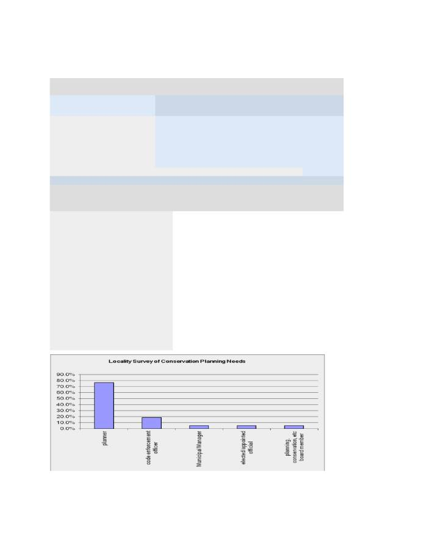
36
Question 2
Please identify your role (choose all that apply):
Answer Options
Response Percent
Response
Count
planner
76.3%
29
code enforcement officer
18.4%
7
Municipal Manager
5.3%
2
elected/appointed official
5.3%
2
planning, conservation, etc
board member
5.3%
2
Other (please specify)
15
answered question
38
skipped question
12
Number Response Date
Other (please specify)
Categories
1
May 19, 2011 4:07 PM GIS
1
2
May 17, 2011 12:14 PM Water resources
2
3
May 16, 2011 7:42 PM GIS Coordination
1
4
May 16, 2011 12:32 PM ecology
4
5
May 13, 2011 1:24 PM Planning & Zoning Director
6
6
May 12, 2011 7:31 PM Service Forester
2
7
May 12, 2011 4:42 PM Staff member of land trust
3
8
May 12, 2011 12:33 PM Stormwater Manager/Erosion Control
7
9
May 12, 2011 11:57 AM university faculty, geography
4
10
May 11, 2011 6:13 PM GIS Analyst
1
11
May 11, 2011 5:16 PM Env Programs
4
12
Mar 28, 2011 3:29 PM
Field Director Northern Neck Land
Conservancy
3
13
Mar 24, 2011 12:36 PM Technology Director
1
14
Mar 23, 2011 2:57 PM Regional Government Manager
5
15
Mar 9, 2011 9:35 PM GIS Coordinator
1
37
Question 3
What are the important issues to your community? (Choose as many as applicable)
Answer Options
Response Percent
Response Count
economic development
91.7%
44
rural character
75.0%
36
traffic
54.2%
26
taxes/budgeting
62.5%
30
quality of life
81.3%
39
Other (please specify)
7
answered question
48
skipped question
2
Number Response Date
Other (please specify)
1
May 17, 2011 10:13 PM
farmer/suburbanite interface; lack of citizen
understanding of environmental issues
2
May 12, 2011 7:31 PM Open Space Preservation
3
May 12, 2011 4:42 PM
impact of nearby military training: explosions that
vibrate houses
4
May 12, 2011 1:19 PM recreation, conservation
5
May 11, 2011 4:25 PM Broadband Internet
6
Apr 11, 2011 8:15 PM coastal
7
Mar 28, 2011 4:47 PM private property rights
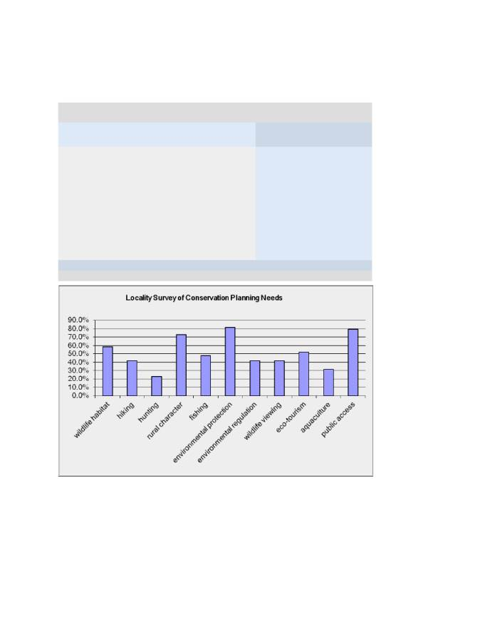
38
Question 4
What are some long term goals for your community, as they relate to areas
conserved or managed for natural resources? (Choose as many as applicable)
Answer Options
Response
Percent
Response
Count
wildlife habitat
58.3%
28
hiking
41.7%
20
hunting
22.9%
11
rural character
72.9%
35
fishing
47.9%
23
environmental protection
81.3%
39
environmental regulation
41.7%
20
wildlife viewing
41.7%
20
eco-tourism
52.1%
25
aquaculture
31.3%
15
public access
79.2%
38
answered question
48
skipped question
2
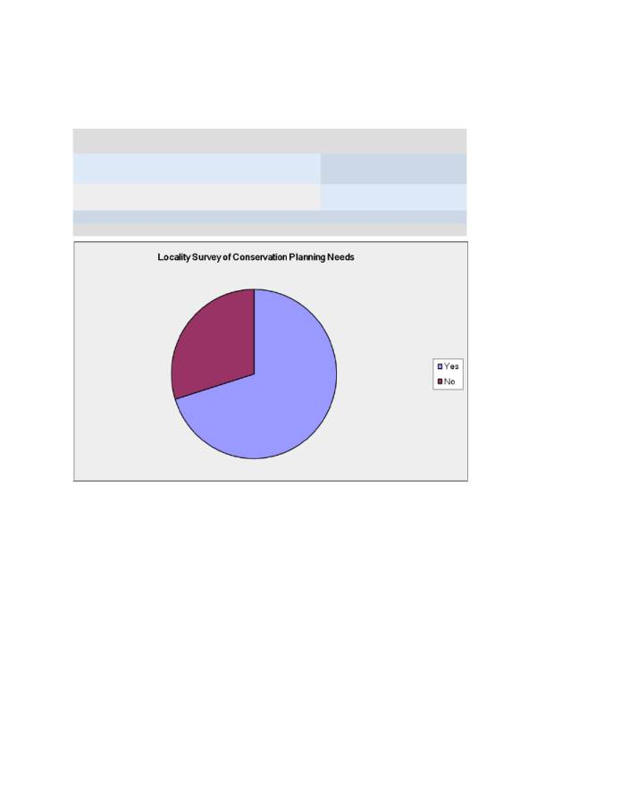
39
Question 5
Are you currently involved in any natural resource conservation planning efforts?
Answer Options
Response
Percent
Response
Count
Yes
70.2%
33
No
29.8%
14
answered question
47
skipped question
3
40
Question 6
At what stage is your community involved in identifying natural resources?
Answer Options
Response
Percent
Response
Count
have not begun
11.4%
5
recently begun
31.8%
14
halfway completed
22.7%
10
nearly completed
18.2%
8
completed
15.9%
7
answered question
44
skipped question
6
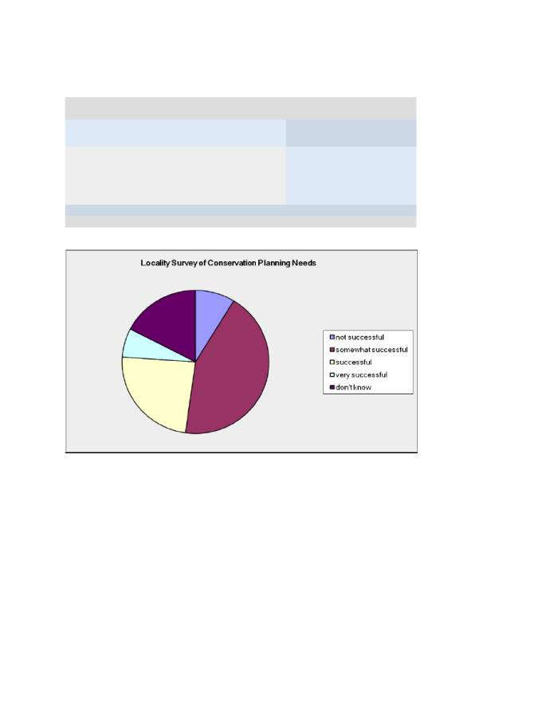
41
Question 7
How would you describe your natural resource area protection efforts?
Answer Options
Response
Percent
Response
Count
not successful
8.7%
4
somewhat successful
43.5%
20
successful
23.9%
11
very successful
6.5%
3
don't know
17.4%
8
answered question
46
skipped question
4
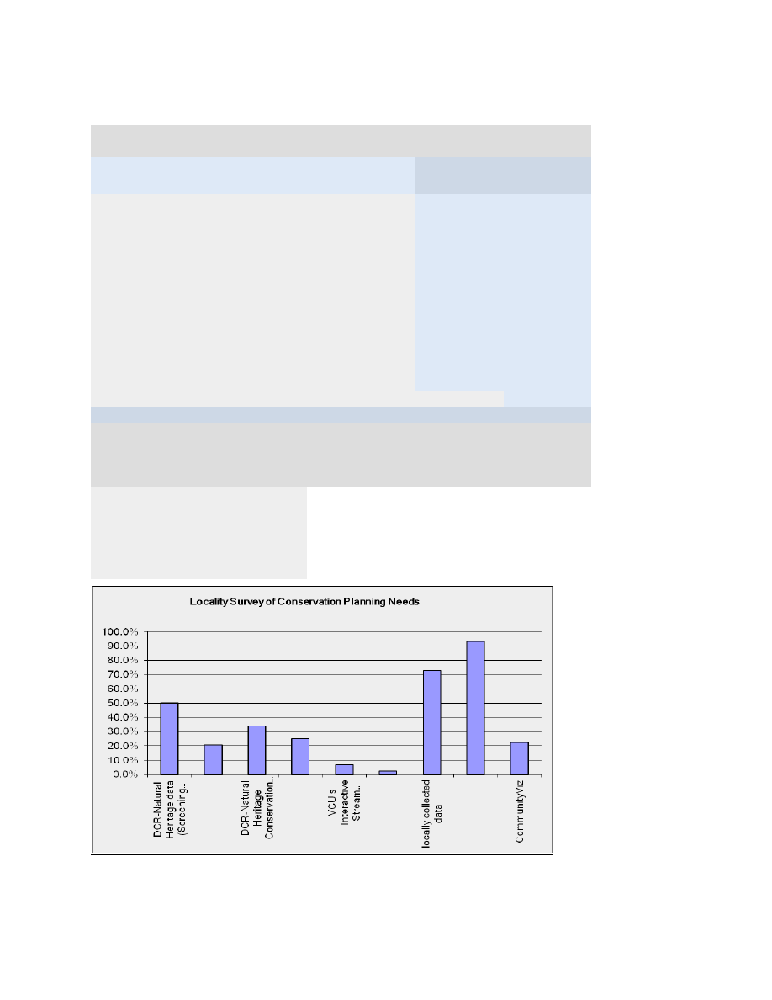
42
Question 8
What data or tools are you using to create your local natural resource maps? (Choose
as many as applicable)
Answer Options
Response
Percent
Response
Count
DCR-Natural Heritage data (Screening Coverage
and/or Conservation Sites datasets, Natural Heritage
Data Explorer, Land Conservation Data Explorer)
50.0%
22
DGIF Priority Wildlife Diversity Conservation Areas
20.5%
9
DCR-Natural Heritage Conservation Planning Tools
(VaNLA, other VCLNA models)
34.1%
15
Coastal Gems
25.0%
11
VCU's Interactive Stream Assessment Resource
(INStAR)
6.8%
3
VIMS' Aquatic Resource Integrity Layer dataset
2.3%
1
locally collected data
72.7%
32
GIS
93.2%
41
CommunityViz
22.7%
10
Other (please specify)
4
answered question
44
skipped question
6
Number Response Date
Other (please specify)
1
May 17, 2011 10:13 PM
DGIF wetlands inventory, FSA maps, PWC
County Mapper, NRCS web soil survey, NRCS
threatened and endangered species maps
2
May 12, 2011 12:33 PM Unknown
3
Apr 11, 2011 7:46 PM VA Dept. of Mines, Minerals, and Energy
4
Mar 11, 2011 8:38 PM Green Infrastructure Mapping
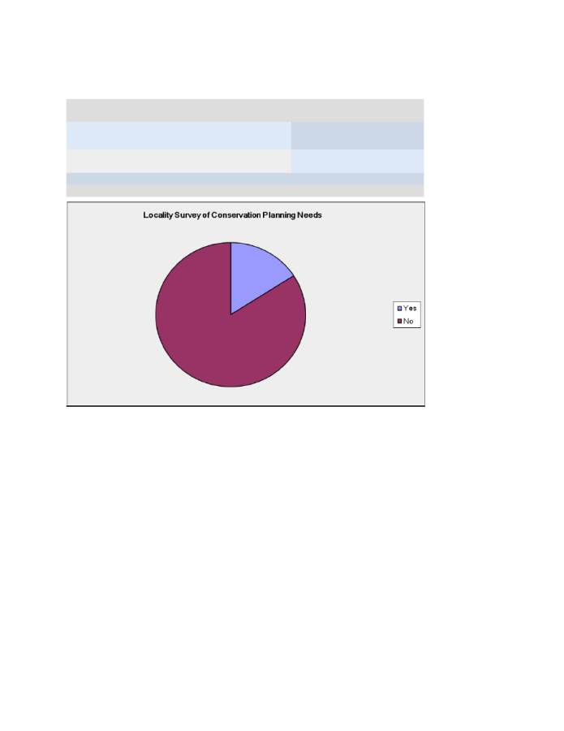
43
Question 9
Do you use CommunityViz in your planning efforts?
Answer Options
Response
Percent
Response
Count
Yes
15.9%
7
No
84.1%
37
answered question
44
skipped question
6
44
Question 10
Would you like to know more about CommunityViz?
Answer Options
Response
Percent
Response
Count
Yes
61.5%
24
No
38.5%
15
answered question
39
skipped question
11
45
Question 11
If so, please leave your contact information below.
Answer Options
Response Count
20
answered question
20
skipped question
30
Number Response Date
Response Text
1
May 19, 2011 4:07 PM hmcgowan@west-point.va.us
2
May 17, 2011 10:13 PM katenorris@pwswcd.org
3
May 13, 2011 2:22 PM
John Shaw, Mathews County
Director of Planning & Zoning
P. O. Box 839
Mathews, VA 23109
4
May 12, 2011 6:52 PM kwutt@fredericksburgva.gov
5
May 12, 2011 4:42 PM
I have no idea what it even is, so...sure.
wbailey@nvct.org
6
May 12, 2011 1:19 PM
john_reffit@blm.gov, david_lyster@blm.gov,
douglas_vinson@blm.gov
7
May 11, 2011 6:13 PM
Rita Taylor
rtaylor@gloucesterva.info
8
May 11, 2011 5:16 PM srae@gloucesterva.info
9
May 11, 2011 4:25 PM slucchesi@kingwilliamcounty.us
10
Apr 18, 2011 6:08 PM
David Imburgia 757-727-5221 or
dimburgia@hampton.gov
11
Apr 13, 2011 7:22 PM sbenson@co.northampton.va.us
12
Apr 13, 2011 7:05 PM
Laura Grape, Senior Environmental Planner
lgrape@novaregion.org3060 Williams Drive,
Suite 510
Fairfax, VA 22031
13
Apr 12, 2011 7:44 PM egibson@gloucesterva.info
14
Apr 11, 2011 9:02 PM brussof@portsmouthva.gov
15
Apr 11, 2011 8:15 PM
Anne Ducey-Ortiz
aducey@gloucesterva.info
PO Box 329, Gloucester VA 32061
16
Apr 11, 2011 7:46 PM
Kim Hummel, Environmental Planner
Isle of Wight County Dept. of Planning and
Zoning
P.O. Box 80
Isle of Wight, VA 23397
17
Apr 11, 2011 6:55 PM cmckenna@vbgov.com
18
Apr 11, 2011 12:56 PM
William Neville, Town of Chincoteague
6150 Community Drive
Chincoteague Island, VA 23336
wneville@chincoteague-va.gov
19
Mar 24, 2011 12:36 PM
Mark Bittner, mbittner@craterpdc.org
(804) 861-1666 x237
20
Mar 15, 2011 2:04 PM
Heather Barrar
barrarh@chesterfield.gov
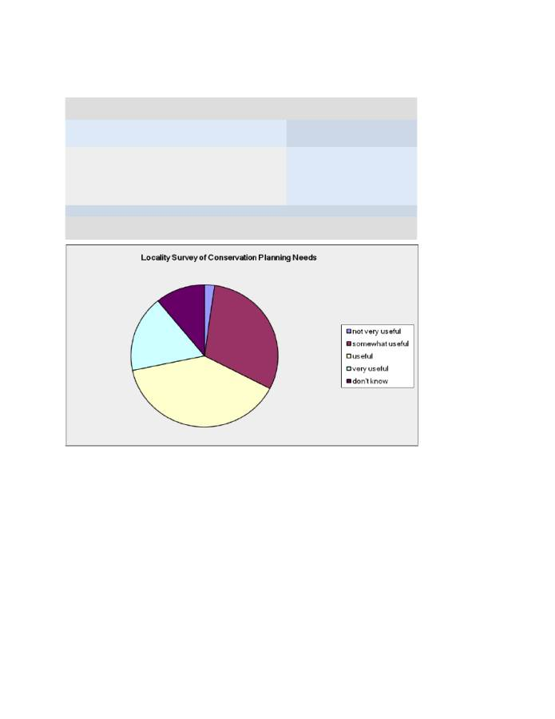
46
Question 12
How would you rank the usefulness of the data provided by the State?
Answer Options
Response
Percent
Response
Count
not very useful
2.2%
1
somewhat useful
30.4%
14
useful
39.1%
18
very useful
17.4%
8
don't know
10.9%
5
answered question
46
skipped question
4
47
Question 13
Please provide details for the previous reply, along with your (optional) contact
information:
Answer Options
Respons
e Percent
Response Count
Details
77.3%
17
Contact info
45.5%
10
answered question
22
skipped question
28
Number
Response
Date
Details
Cat
eg
ori
es
Contact info
1
May 19, 2011
4:07 PM
7
hmcgowan@
west-
point.va.us
2
May 17, 2011
10:13 PM
we pull maps and data from
variety of state and other
sources
4
3
May 12, 2011
4:42 PM
7
Alex Long;
along@infionl
ine.net
4
May 12, 2011
4:42 PM
It helps us identify where to
target protection efforts,
and what sort of protections
we should consider for a
given property.
3
5
May 12, 2011
1:19 PM
our contract archaeologists
use state cultural data
4
6
May 12, 2011
11:57 AM
state provides good
centerline data and image
data
4
7
May 12, 2011
11:31 AM it's somewhat useful
6
8
May 11, 2011
7:50 PM
Guidance in the Ches. Bay
Pres. Act
3
pthompson@
kingandquee
nco.net
9
May 11, 2011
6:13 PM
Aerial imagery from state
(VGIN/VITA) has been
extremely beneficial
4
10
May 11, 2011
5:16 PM instar
4
11
May 11, 2011
4:25 PM DCR Natural Heritage
4 769-4969
12
Apr 13, 2011
7:22 PM
I don't work with the GIS
data or CommunityViz but
my staff planner does. We
haven't taken full advantage
of all the data sources, so
don't feel I can comment
more definitively.
6
13
Apr 13, 2011 State data is very useful,
1
48
7:05 PM particularly when
conducting analyses at a
regional scale. That said,
local knowledge is
extremely helpful in fine-
tuning state data.
14
Apr 12, 2011
7:44 PM
would like to see more
centralized information
2
egibson@glo
ucesterva.inf
o
15
Apr 11, 2011
9:02 PM
Fred Brusso, Planning
Administrator
6
brussof@port
smouthva.go
v (757)
393-8836 x
4212
16
Apr 11, 2011
8:15 PM
No enforcement or
regulatiory tools to be able
to protect resources even if
they are discovered
5
17
Apr 11, 2011
12:56 PM
natural resource data and
tools need to be integrated
with other planning tools to
be useful
2
wneville@chi
ncoteague-
va.gov
18
Mar 28, 2011
3:29 PM
7
northernneckj
oe@gmail.co
m
19
Mar 22, 2011
8:17 PM
it is useful, sometimes it is
outdated or not appropriate
for a small scale at which
we are working
1
20
Mar 14, 2011
2:48 PM
7
George M
Homewood,
PO Box 50,
New Kent,
VA 23124;
804-966-
9603
21
Mar 11, 2011
8:38 PM
for site plan reviews need
more site specific
information and more
pertinent information to help
us address upcoming
regulations
1,
5
22
Mar 9, 2011
9:35 PM
7
tbrockenbrou
gh@co.acco
mack.va.us
49
Question 14
Are you aware of Priority Conservation Areas data and maps?
Answer Options
Response
Percent
Response
Count
Yes
51.2%
22
No
48.8%
21
answered question
43
skipped question
7
50
Question 15
Have you used the Priority Conservation Areas data and/or maps for natural area
planning?
Answer Options
Response
Percent
Response
Count
Yes
25.6%
11
No
74.4%
32
answered question
43
skipped question
7
51
Question 16
If so, can you please provide examples of how the Priority
Conservation Areas data have been used?
Answer Options
Response
Count
15
answered question
15
skipped question
35
Number
Response
Date
Response Text
Cate
gorie
s
1
May 17, 2011
10:15 PM
Don't know what they are?
Are these RPA maps?
8
2
May 12, 2011
4:48 PM
the above answers are based on the GWRC
participation in creating habitat priority maps
3
3
May 12, 2011
4:47 PM N/A
8
4
May 12, 2011
1:22 PM as a layer with recreational/scenic trail planning
4
5
May 11, 2011
6:25 PM Protection of reservoir areas.
1
6
May 11, 2011
6:16 PM n/a
8
7
May 11, 2011
5:07 PM Mapping green infrastructure
2
8
Apr 13, 2011
7:26 PM
We haven't yet used the PCA data, but we are
now embarking on a comp plan review and
expect to use that information.
5
9
Apr 13, 2011
7:14 PM
My response to 15 is actually "kind of". We took
a look at the PCA in NoVA and found that it was
a bit overwhelming to explain the results.
7
10
Apr 11, 2011
7:50 PM Cannot answer. I am not familiar with this data.
8
11
Apr 11, 2011
1:02 PM
PCA maps were consulted to determine the
applicability of grant funds for land
purchase/protection
1
12
Mar 28, 2011
4:09 PM
To select a watershed for a Special Project area
as a joint venture w/VOF for concentrated out
reach efforts.
6
13
Mar 22, 2011
8:22 PM
green infrastructure asset mapping and
opportunity identification
2
14
Mar 22, 2011
8:04 PM
CZMA grant support for local blue green
infrastructure planning ; CELCP applications
2
15
Mar 11, 2011
8:40 PM
Part of the Green Infrastructure Maps created
for the County
2
52
Question 17
Did the information in the Priority Conservation Areas data reflect your
local knowledge of conditions?
Answer Options
Response
Count
15
answered question
15
skipped question
35
Number
Response Date
Response Text
Categories
1
May 17, 2011 12:15
PM Seems rather incomplete
4
2
May 12, 2011 4:48
PM
somewhat; there are areas that
were left out that should have
been included and areas included
I was perplexed as to why
2
3
May 12, 2011 4:47
PM N/A
5
4
May 12, 2011 1:22
PM yes,
1
5
May 11, 2011 6:25
PM Yes
1
6
May 11, 2011 6:16
PM n/a
5
7
May 11, 2011 5:07
PM in most cases
3
8
Apr 13, 2011 7:14
PM
There were some inconsistencies
with the results from the PCA and
local knowledge, particularly
when we explored some of the
datasets used in the analysis
(Aquatic Resources
Integrity/Healthy Waters).
4
9
Apr 11, 2011 7:50
PM Cannot answer.
5
10
Apr 11, 2011 1:02
PM generally
3
11
Mar 28, 2011 4:09
PM Yes
1
12
Mar 22, 2011 8:22
PM somewhat
2
13
Mar 22, 2011 8:04
PM most of the time yes.
3
14
Mar 15, 2011 2:05
PM Yes
1
15
Mar 11, 2011 8:40
PM yes
1
53
Question 18
Do you plan on using Priority Conservation Areas data for your future planning
needs?
Answer Options
Response
Percent
Response
Count
Yes
64.7%
22
No
35.3%
12
answered question
34
skipped question
16
54
Question 19
If so, what are the characteristics of the Priority Conservation Areas
that made you decide to use it?
Answer Options
Response
Count
15
answered question
15
skipped question
35
Number
Response
Date
Response Text
Categ
ories
1
May 17, 2011
12:15 PM As an additional basis for environmental review
3
2
May 16, 2011
8:40 PM Comprehensive plan map
2
3
May 12, 2011
4:48 PM
Town is considering annexation;
Town is very active in land-use matters of
Caroline County since that impacts our citizens
1
4
May 12, 2011
4:47 PM
Re: #18, I might use PCAs depending what they
offer, once I look into it. If they offer more
detailed or different information than Natural
Heritage Resource Screening, or represent
additional state policies re: conservation
priorities, then I'll use them.
5, 6
5
May 12, 2011
1:20 PM
since we manage 1 800 acre site in virginia, it
would just be to find out what our classification is
1
6
May 11, 2011
8:07 PM GIS based current information readily available
5
7
May 11, 2011
6:25 PM Not sure.
6
8
May 11, 2011
6:16 PM I need to familiarize myself with this data.
6
9
Apr 13, 2011
7:26 PM
We were involved in developing the project for
the county.
7
10
Apr 11, 2011
8:16 PM Not sure
6
11
Apr 11, 2011
7:50 PM Cannot answer.
6
12
Mar 28, 2011
4:09 PM
Large blocks of undeveloped lands w/ valuable
wildlife habitat.
1
13
Mar 22, 2011
8:22 PM all the different datasets involved in its creation
5
14
Mar 22, 2011
8:04 PM Depends on the project need.
6
15
Mar 11, 2011
8:40 PM can help guide developement
4
55
Question 20
If not, why not?
Answer Options
Response
Count
14
answered question
14
skipped question
36
Number
Response
Date
Response Text
Categories
1
May 13, 2011
1:25 PM
We have relatively good knowledge of the
available convservations areas within the
Town.
3
2
May 12, 2011
4:47 PM N/A
1
3
May 12, 2011
11:59 AM
cannot answer the question because of lack
of knowledge about PCA
1
4
May 11, 2011
7:52 PM Did not know about them
1
5
May 11, 2011
6:16 PM n/a
1
6
May 11, 2011
5:17 PM not familiar with what it has to offer
1
7
Apr 18, 2011
6:10 PM No personal knowledge
1
8
Apr 13, 2011
7:14 PM
The inconsistencies as mentioned in
question 17 resulted in a loss of confidence
in the data.
4
9
Apr 11, 2011
8:16 PM Not familiar with them yet
1
10
Apr 11, 2011
7:50 PM Cannot answer.
1
11
Apr 11, 2011
1:02 PM
As a developed TOWN, we are already
surrounded by Conservation Areas.
2
12
Mar 28, 2011
4:52 PM
efforts to identify valuable green
infrastructure have been met with opposition
from public; conservation designated areas
have been removed from Comprehensive
Plan and future land use map
5
13
Mar 22, 2011
8:04 PM na
1
14
Mar 11, 2011
8:40 PM
However, large intact cores already
developed
2
56
Question 21
How could the Priority Conservation Areas data be improved?
Answer Options
Response
Count
12
answered question
12
skipped question
38
Number
Response
Date
Response Text
Categories
1
May 13, 2011
1:25 PM N/A
1
2
May 12, 2011
4:48 PM
greater access; it is my understanding that the
DCR data canNOT be used unless we seek
permission to use it; therefore, why bother?
5
3
May 12, 2011
4:47 PM N/A
1
4
May 11, 2011
8:07 PM Do not know.
1
5
May 11, 2011
6:16 PM n/a
1
6
Apr 13, 2011
7:14 PM Ground truth will local data and knowledge.
3
7
Apr 11, 2011
9:04 PM Provide information on what it is.
4
8
Apr 11, 2011
7:50 PM Cannot answer.
1
9
Apr 11, 2011
1:02 PM
Update mapping to coordinate with Blue
Green Infrastructure Plan adopted in
Accomack County
2
10
Mar 22, 2011
8:22 PM
data can always be improved... I suppose the
more available optional nuances, the better.
The more insight it can give me into assets on
the ground the better.
3, 4
11
Mar 22, 2011
8:04 PM na
1
12
Mar 11, 2011
8:40 PM update it
2
57
Question 22
Was the Priority Conservation Areas data documentation adequate?
Answer Options
Response
Percent
Response
Count
Yes
68.8%
11
No
31.3%
5
answered question
16
skipped question
34
58
Question 23
How could the documentation be improved?
Answer Options
Response
Count
7
answered question
7
skipped question
43
Number Response Date Response Text
1
May 12, 2011
4:48 PM
Greater detail and input from the general public and then
full access and use by public
2
May 12, 2011
4:47 PM N/A
3
May 12, 2011
11:59 AM cannot answer #22. see above
4
May 11, 2011
8:07 PM Do not know.
5
Apr 11, 2011
7:50 PM Cannot answer.
6
Mar 24, 2011
12:38 PM
Make date of data creation apparent; list a contact
name; improve metadata generally
7
Mar 22, 2011
8:04 PM
na-- concerning question 24 and 25: Who is the "state".
Not sure how to answer these questions
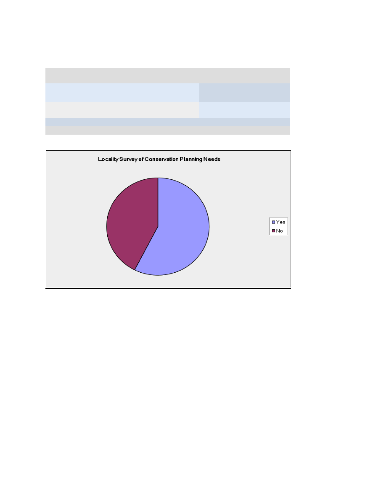
59
Question 24
Are you aware that the State can provide direct technical assistance with your
planning efforts?
Answer Options
Response
Percent
Response
Count
Yes
57.5%
23
No
42.5%
17
answered question
40
skipped question
10

60
Question 25
Have you accessed the State for assistance with your planning efforts?
Answer Options
Response
Percent
Response
Count
Yes
30.0%
12
No
70.0%
28
answered question
40
skipped question
10
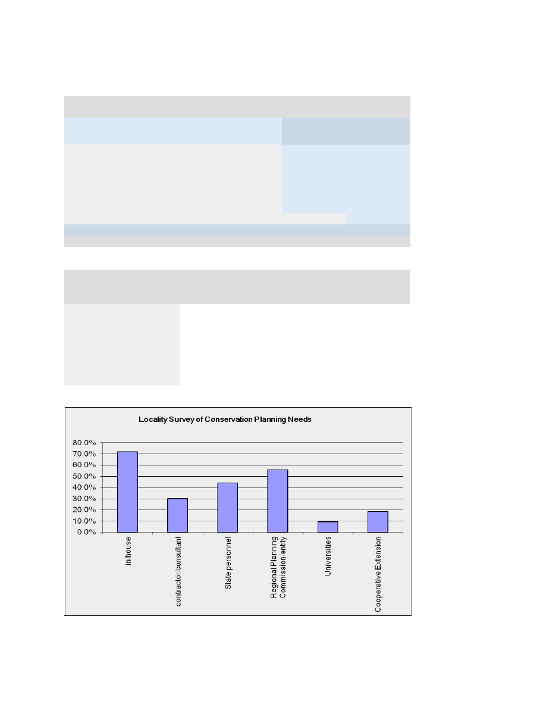
61
Question 26
Who provides you assistance with your natural resource planning efforts? (select all
that apply)
Answer Options
Response
Percent
Response
Count
in house
72.1%
31
contractor/consultant
30.2%
13
State personnel
44.2%
19
Regional Planning Commission/entity
55.8%
24
Universities
9.3%
4
Cooperative Extension
18.6%
8
Other (please specify)
4
answered question
43
skipped question
7
Number
Response
Date
Other (please specify)
1
May 12, 2011
4:48 PM Port Royal is very small and cannot afford outside help
2
May 12, 2011
4:47 PM County planners for the most part
3
Apr 13, 2011
7:14 PM
Our contractor/consultant has been in direct contact
with state staff, even though we have not.
4
Mar 14, 2011
2:51 PM Colonial SWCD, Green Infrastructure Center
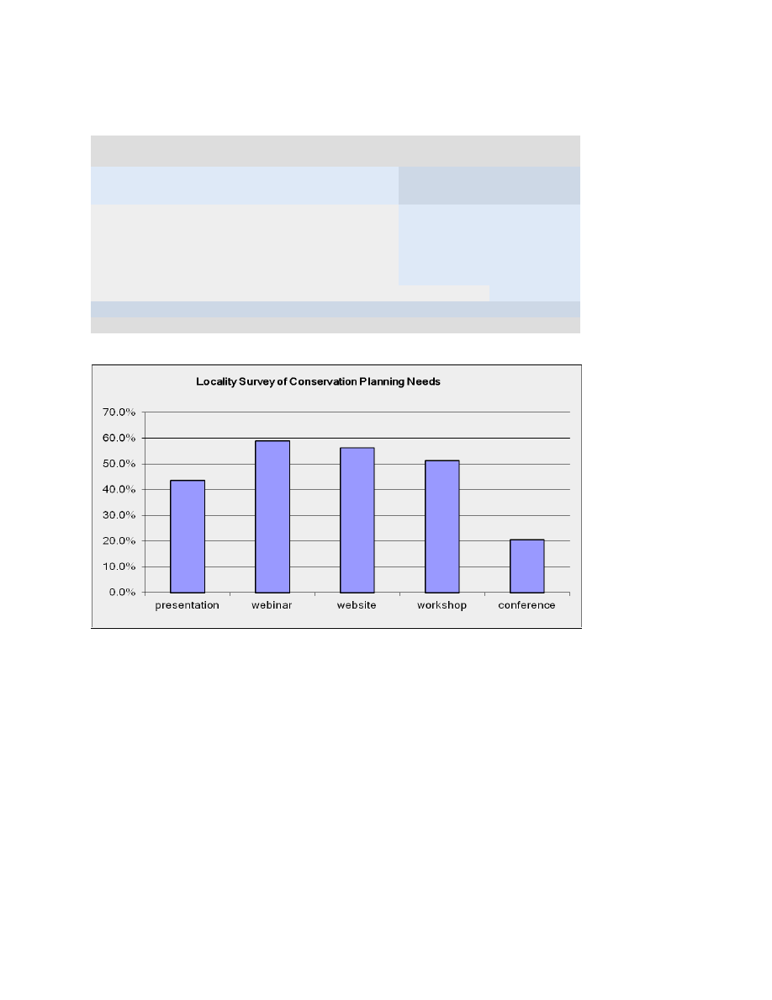
62
Question 27
How would you like to learn more about the technical assistance for natural resource
planning? (select all that apply)
Answer Options
Response
Percent
Response
Count
presentation
43.6%
17
webinar
59.0%
23
website
56.4%
22
workshop
51.3%
20
conference
20.5%
8
Other (please specify)
0
answered question
39
skipped question
11
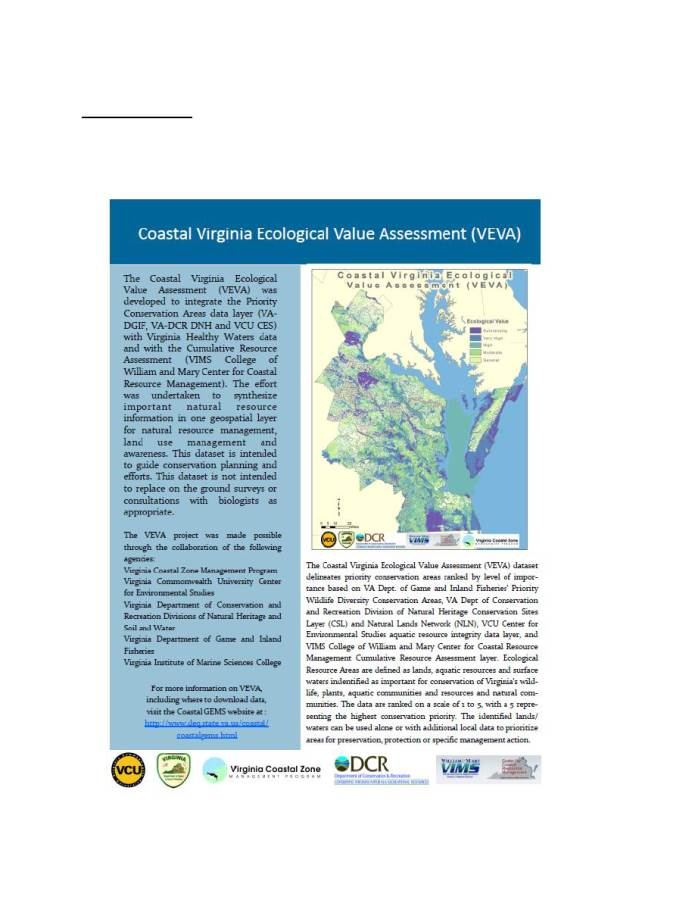
63
Appendix B. Handout
The following handout was developed and distributed at workshops, meetings, and conferences to serve
as a quick, concise reference for Coastal VEVA.
This handout will continue to serve as a key ―leave-
behind‖ for the Coastal VEVA.
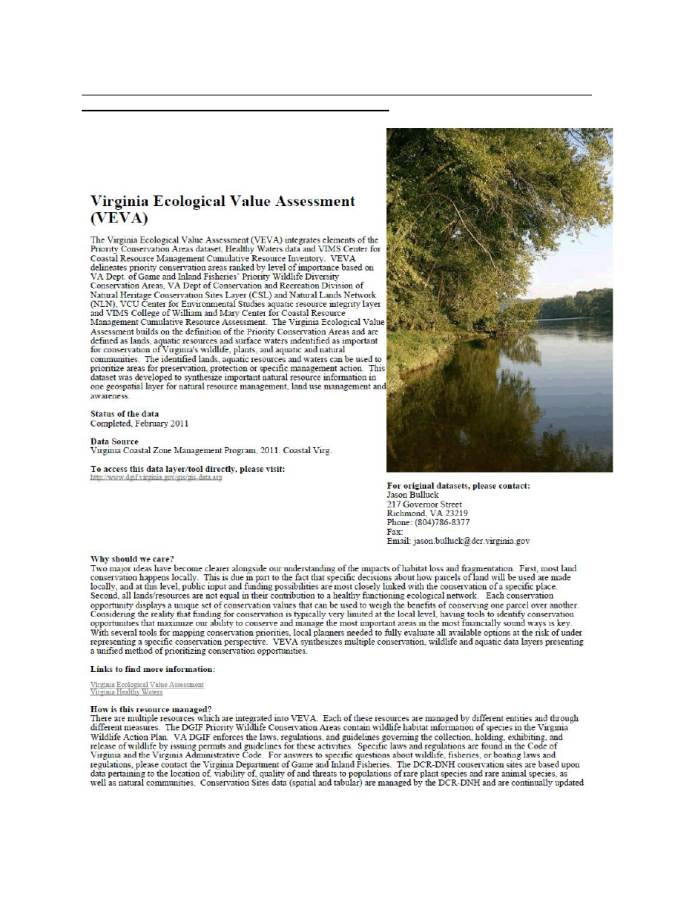
64
Appendix C. Coastal VEVA Factsheet, developed to accompany the Coastal VEVA data layer on the
Virginia CZMP’s Coastal GEMS interactive Mapping website
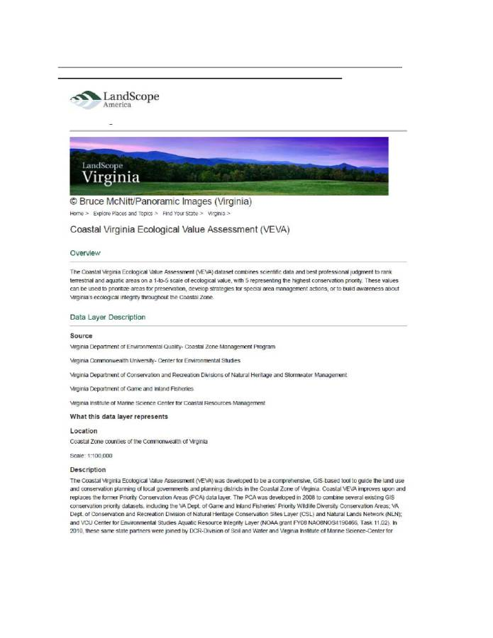
66
Appendix D. User Friendly Metadata developed to accompany the Coastal VEVA data layer on
LandScope Virginia and LandScope Chesapeake interactive mapping websites
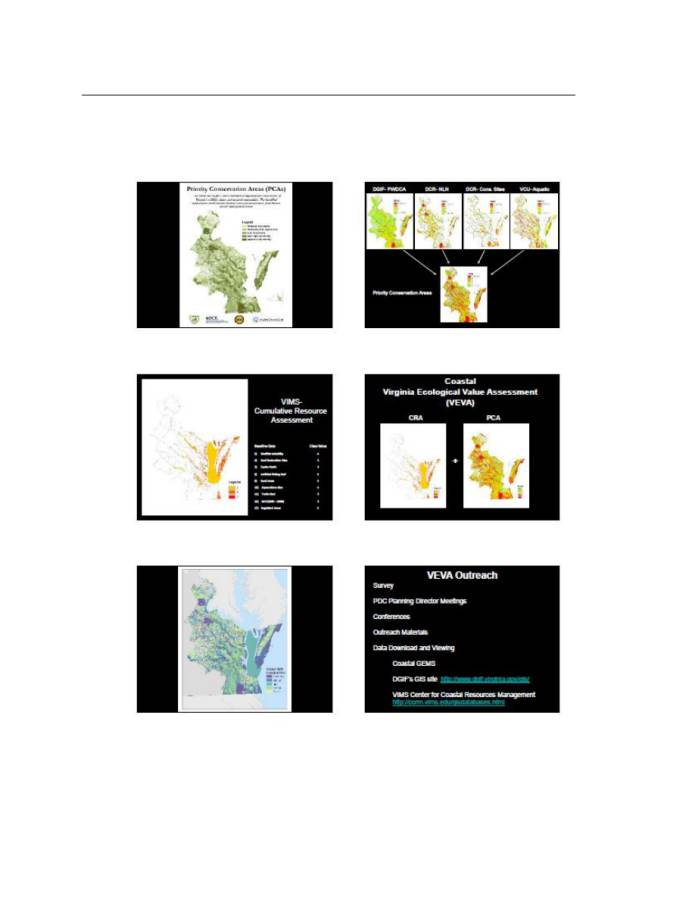
68
Appendix E. Presentation slides for Coastal PDC Meeting and Environment Virginia Symposium
69
Appendix F. Poster Presentation Materials for the York River Symposium
Abstract
Name of corresponding author
Marcia R. Berman* (1)
Jason F. Bulluck (2)
Affiliation
VIMS Center for Coastal Resources
Management (1)
VA Dept. of Conservation and Recreation
Division of Natural Heritage (2)
Email address
Telephone number
marcia@vims.edu
(1)
Jason.Bulluck@dcr.virginia.gov
(2)
(804) 684-7188 (1)
(804) 786-8377 (2)
Mailing address:
(1) P.O Box 1346 Gloucester Point, VA 23062
(2) 217 Governor Street
Richmond, Virginia 23219
Coastal Virginia Ecological Value Assessment (VEVA): A conservation planning tool for Virginia’s
Coastal Zone.
Marcia R. Berman* (1) and Jason F. Bulluck (2)
Habitat loss and fragmentation pose threats to long term conservation of wildlife species and
natural communities. Conservation planning at the local level offers a proactive approach to managing
current and future stressors. However, tools available to local governments in support of this process
are limited. The Coastal Virginia Ecological Value Assessment (VEVA) synthesizes best available resource
information into one geospatial product to provide guidance to localities engaged in conservation and
land use planning. VEVA is a multi-agency collaborative effort funded by Virginia’s Coastal Zone
Management Program.
In 2009, Virginia’s Departments of Game and Inland Fisheries, Conservation and Recreation-
Division of Natural Heritage, and Virginia Commonwealth University’s Center of Environmental Studies
(VCU) combined conservation databases to create Virginia’s Priority Conservation Areas (PCA) dataset.
In 2010, the Virginia Institute of Marine Sciences’ Center for Coastal Resources Management engaged in
a similar activity; focused on estuarine and coastal bay areas. In 2011, the two initiatives were
integrated to create Coastal VEVA.
Coastal VEVA takes an integrated approach to blue-green infrastructure as a regional and local
level planning tool. VEVA combines scientific data and best professional judgment to rank terrestrial and
aquatic areas for ecological value. A qualitative ecological value is assigned to an area based on habitat
and resources present. A 5-tier classification scheme ranks areas from “general” to “outstanding”.
These data can be applied to conservation planning efforts to maximize conservation objectives while
also meeting local development needs.
The presentation will discuss project details, highlighting examples from the York River
Watershed.
75
Appendix G. Materials for Virginia GIS Conference
Abstract
Jason Bulluck
Information Manager
Virginia Department of Conservation and Recreation- Division of Natural Heritage
Jason.bulluck@dcr.virginia.gov
(804) 786-8377
Coastal Virginia Ecological Value Assessment (VEVA): A conservation planning tool for Virginia’s
Coastal Zone.
Habitat loss, degradation, and fragmentation pose significant threats to the long term
conservation of Virginia’s wildlife species and natural communities. Comprehensive conservation
planning at the local level offers a proactive and effective approach to managing current and future
resources. However, locally applicable tools are limited. The Coastal Virginia Ecological Value
Assessment (VEVA) synthesizes best available state level resource information into one geospatial
product to provide guidance to localities engaged in conservation and land use planning. Funded by
Virginia’s Coastal Zone Management Program, VEVA is a multi-agency collaborative effort. In 2009,
Virginia’s Departments of Game and Inland Fisheries, Conservation and Recreation- Division of Natural
Heritage, and Virginia Commonwealth University’s Center of Environmental Studies integrated selected
conservation data to create the coastal Priority Conservation Areas (PCA) dataset. In 2010, the Virginia
Institute of Marine Sciences’ Center for Coastal Resources Management engaged in a similar activity,
focused on estuarine and coastal bay areas. The two initiatives were combined in 2011 to create the
coastal VEVA. Coastal VEVA incorporates scientific data and best professional judgment to rank
terrestrial and aquatic areas for ecological value. A 1-to-5, “general” to “outstanding” rank is assigned
to terrestrial and aquatic areas based on wildlife habitat, as well as blue and green infrastructure assets.
These data, as maps and GIS layers, can be applied to conservation planning efforts, as well as land use
decisions, to help assure minimal impacts to conservation values, while meeting local development
needs.
The “how to” presentation will discuss project details and GIS applications.

79
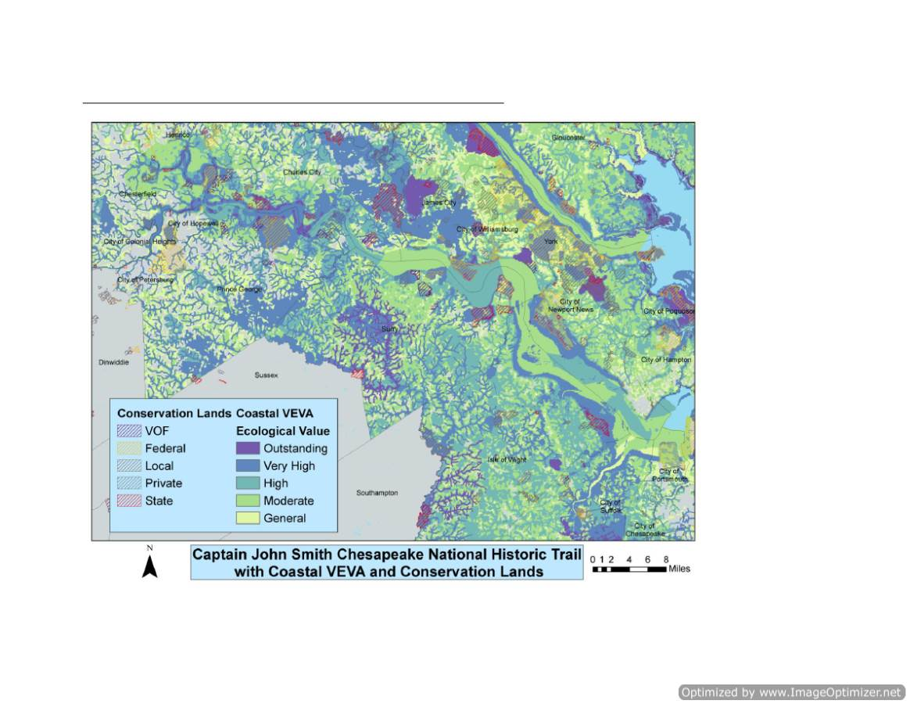
81
Appendix H. Map produced for National Park Service John Smith Trail Discussion
82
Appendix I. Materials for the February CBNERRVA Blue-Green Infrastructure Workshop
Agenda
Introducing Green Infrastructure for Coastal Resilience
February 2, 2012
Virginia Institute of Marine Science
8:30 – 9:00 AM - Coffee and sign-in
9:00 AM - Welcome – Sandra Erdle – Coordinator, Coastal Training Program,
Chesapeake Bay National Estuarine Research Reserve in VA
9:05 AM - Green Infrastructure Concepts and Principles: What is it? –
Lindsay Goodwin, NOAA Coastal Services Center
An Introduction to Green Infrastructure Planning Processes – Lindsay
Goodwin
10:15 AM - Break
Getting On-the-Ground: Green Infrastructure Network Design – Lindsay
Goodwin
12:30 PM Lunch
1:15 PM – Blue and Green Infrastructure Planning Initiatives of the Virginia Coastal
Zone Management Program – a brief introduction to the VA CZM Program, and to
the primary B/G initiatives: Coastal VEVA, and the Regional PDC projects. Shep
Moon and Beth Polack, VA Coastal Zone Management Program.
1:30 PM - Local Perspective – VEVA as a Resource – Jason Bulluck, VA
Division of Natural Heritage
2:00 PM – Incorporating Blue and Green Infrastructure into Local Plans and
Ordinances in Coastal Virginia – Shep Moon and Beth Polack
83
2:30 - Local Perspective - the process – results – projects, examples! – Alisa
Hefner, Skeo Solutions and Green Infrastructure Center
3:15 PM - What’s Next? Resources for Moving Forward – Lindsay Goodwin
3:30 PM - Feedback and Evaluation
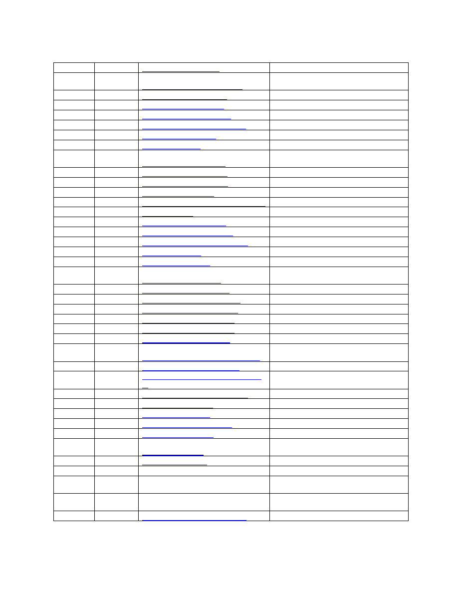
84
Attendees (via sign-in sheet)
Michael
Anaya
manaya@hampton.gov
City of Hampton
Faye
Andrashk
o
Faye.Andrashko@nnswcd.org
Northern Neck Soil and Water Cons
District
Heather
Barrar
Barrarh@chesterfield.gov
Chesterfield County
Laura
Barry
BarryL@chesterfield.gov
Chesterfield County
Bronco
Bayless
fishinbronco@earthlink.net
Gloucester County Wetlands Board
Pam
Boatwright
pboatwright@elizabethriver.org
Elizabeth River Project
Carrie
Bookholt
cbookhol@vbgov.com
City of Virginia Beach
Louis
Bott
lbott@nngov.com
City of Newport News
Bobbie
Burton
burtonbs@longwood.edu
Hull Springs Farm of Longwood
College
Ed
Carr
Ed.Carr@dgif.virginia.gov
VA Dept of Game and Inland Fisheries
Kevin
Dubois
kevin.dubois@norfolk.gov
City of Norfolk
Gayle
Hicks
ghicks@hampton.gov
City of Hampton
Shereen
Hughes
shereen.hughes@wetlandswatch.org
Wetlands Watch
Patty
Hunt
phunt@jlab.org
Jefferson Laboratory-Dept of Energy
David
Imburgia
dimburgia@hampton.gov
City of Hampton
John
Kirk
John.Kirk@dgif.virginia.gov
VA Dept of Game and Inland Fisheries
Danielle
Kulas
Danielle.Kulas@dcr.virginia.gov
DCR's Division of Natural Heritage
Jacob
Lacy
jlacy@nngov.com
City of Newport News
Alex
Long
along@infionline.net
Weichert Realtors
Robert
MacPhers
on
RMacPher@vbgov.com
City of Virginia Beach
Geralyn
Mireles
Geralyn_Mireles@fws.gov
US Fish and Wildlife Service
David
Norris
david.norris@dgif.virginia.gov
VA Dept of Game and Inland Fisheries
David
Nunnally
dnunnally@co.caroline.va.us
Caroline County
Stacy
Porter
porters@portsmouth.va.gov
City of Portsmouth
Marshall
Sebra
msebra@kilmarnockva.com
Town of Kilmarnock
Justin
Shafer
Justin.Shafer@norfolk.gov
City of Norfolk
James
Staranowi
cz
jstaranowicz@staffordcountyva.gov
Stafford County
Peter
Stith
pstith@co.northampton.va.us
Northampton County
Roxanne
Stonecyph
er
rstonecypher@CityofChesapeake.N
et
City of Chesapeake
Brian
Swets
bswets@CityofChesapeake.Net
City of Chesapeake
Judy
Tucker
Coastalsoc@aol.com
The Coastal Society
Christina
Uperti
Cuperti@vbgov.com
City of Virginia Beach
Jim
White
james.d.white@norfolk.gov
City of Norfolk
Wayne
Wilcox
Wwilcox@vbgov.com
City of Virginia Beach
Sandra
Erdle
syerdle@vims.edu
Chesapeake Bay National Estuarine
Research Reserve in VA
Alisa
Hefner
ahefner@skeo.com
Green Infrastructure Center
Lindsay
Goodwin
lindsay.goodwin@noaa.gov
NOAA Coastal Services Center
Shep
Moon
hsmoon@deq.virginia.gov
VA Coastal Zone Management
Program
Beth
Polack
Beth.Polak@deq.virginia.gov
VA Coastal Zone Management
Program
Jason
Bulluck
Jason.Bulluck@dcr.virginia.gov
DCR's Division of Natural Heritage
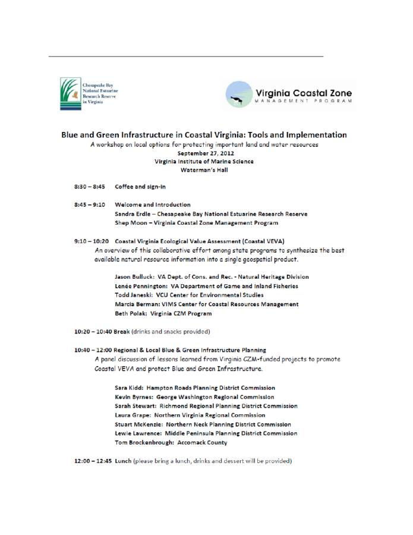
90
Appendix J. Materials for the September CBNERRVA Blue-Green Infrastructure Workshop
Agenda
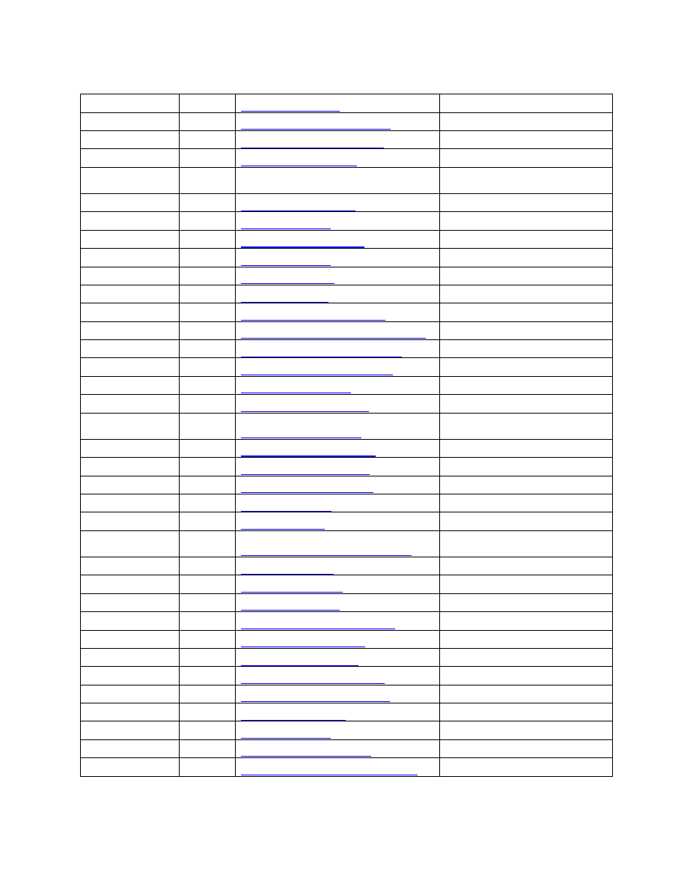
92
Attendees (via sign-in sheet)
Rogard
Ross
rogard@yahoo.com
Friends of Indian River
Aguilar
Leah
Leah.Aguilar@yorkcounty.gov
York County
Aleshire
Emily
Emily.Aleshire@va.usda.gov
USDA, NRCS
Anaya
Michael
manaya@hampton.gov
City of Hampton
Anderson
Al
Lancaster County Wetlands
Board
Ausink
Chris
causink@hampton.gov
City of Hampton
Bahringer
Nils
nils5@verizon.net
VA Beach Wetlands Brd
Barry
Laura
BarryL@chesterfield.gov
Chesterfield County
Berman
Marcia
marcia@vims.edu
CCRM, VIMS
Bilkovic
Donna
donnab@vims.edu
CCRM, VIMS
Bott
Louis
lbott@nngov.com
City of Newport News
Britt
Kristie
Kristie.Britt@deq.virginia.gov
VA DEQ
Brockenbrough
Tom
tbrockenbrough@co.accomack.va.us
Accomack County
Brumbaugh
Barbara
bbrumba@cityofchesapeake.net
City of Chesapeake
Bulluck
Jason
jason.bulluck@dcr.virginia.gov
DCR DNH
Byrnes
Kevin
byrnes@gwregion.org
George Wash Reg Commission
Carver
Craig
craig.carver@aecom.com
AECOM Env. Planner
Chasse
Matt
Matt.Chasse@noaa.gov
NOAA Estuarine Reserves
Division
Creed
Jordon
Jordon.Creed@norfolk.gov
City of Norfolk
Dubois
Kevin
kevin.dubois@norfolk.gov
City of Norfolk
Ducey-Ortiz
Anne
aducey@gloucesterva.info
Gloucester County
Duhring
Karen
karend@vims.edu
CCRM, VIMS
Egginton
Emily
Emily@vims.edu
VIMS
Emslie
Margare
t
margaret.emslie@deq.virginia.gov
VA DEQ
Erdle
Sandra
syerdle@vims.edu
CBNERRVA/VIMS
Evans
Jimmy
jrevans@vbgov.com
City of Virginia Beach
Firehock
Karen
firehock@gicinc.org
Green Infrastructure Center
Fletcher
Ryan
rfletcher@kingwilliamcounty.us
King William County
Gallegos
John
John_Gallegos@fws.gov
Back Bay NWR
Grape
Laura
lgrape@novaregion.org
Northern VA Reg Council
Green
Amy
Amy.Green@yorkcounty.gov
York County
Harbin
John
jharbin@staffordcountyva.gov
Stafford County
Hardaway
Scott
hardaway@vims.edu
Shoreline Studies Prog/VIMS
Harr
Richard
rharr@nngov.com
City of Newport News
Harvey
Jeffrey
jharvey@co.stafford.va.us
Stafford County
Holloway
Karen
Karen.Holloway@poquoson-va.gov
City of Poquoson
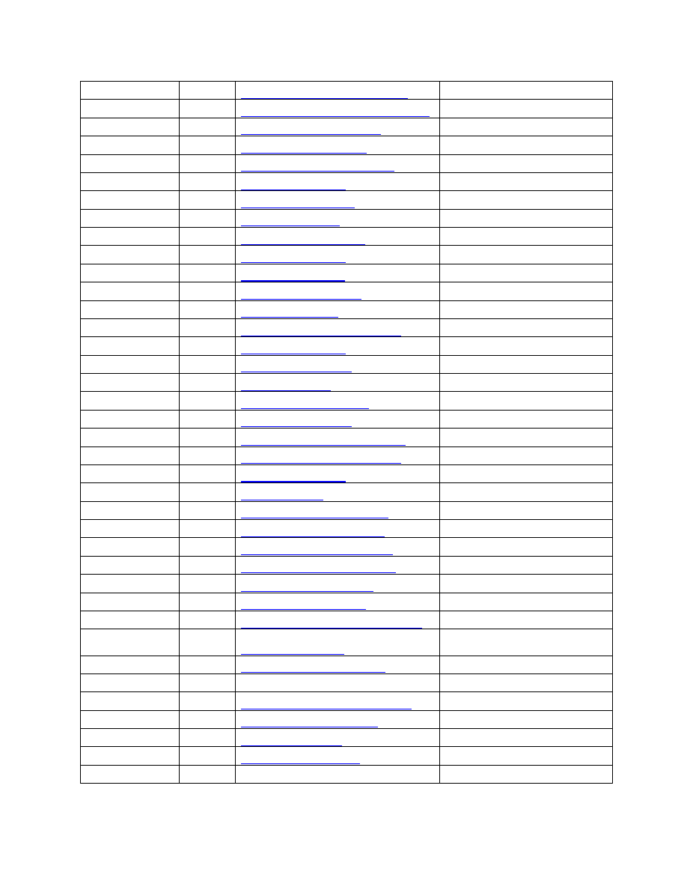
93
Howell
Jennifer
Jennifer.Howell@deq.virginia.gov
VA DEQ
Hughes
Shereen
Shereen.Hughes@wetlandswatch.org
Wetlands Watch
Hummel
Kim
khummel@isleofwightus.net
Isle of Wight County
Imburgia
David
dimburgia@hampton.gov
City of Hampton
Janeski
Todd
Todd.Janeski@dcr.virginia.gov
VCU Ctr for Env. Studies
Janeski
Robert
rjaneski@verizon.net
Lancaster Co. Wetlands Board
Johnson
Greg
Gjohnson@vbgov.com
City of Virginia Beach
Kidd
Sara
skidd@hrpdcva.gov
Hampton Roads PDC
Komenda
Sharon
shkomenda@yahoo.com
Friends of Indian River
Lacatell
Andy
alacatell@TNC.ORG
TNC
Lane
Mike
lanewmike@aol.com
environmental consulting
Lawrence
Lewie
Llawrence@mppdc.com
Middle Peninsula PDC
Lerberg
Scott
lerbergs@vims.edu
CBNERRVA/VIMS
Lewis
Beth
blewis@southamptoncounty.org
Southampton County
Little
Cecil
littlebay@yahoo.com
Middlesex Wetlands Board
Mason
Charles
ccmason@vbgov.com
City of Virginia Beach
Mason
Pam
mason@vims.edu
CCRM/VIMS
McFarlane
Ben
bmcfarlane@hrpdcva.gov
Hampton Roads PDC
McIntyre
Nancy
NMcIntyr@vbgov.com
City of Virginia Beach
McKenzie
Stuart
smckenzie@nnpdc17.state.va.us
Northern Neck PDC
Meehan
Alison
alison.meehan@dcr.virginia.gov
VA DCR
Minnick
Bill
benabill@yahoo.com
Gloucester Wetlands Board
Mitchell
Molly
molly@vims.edu
CCRM, VIMS
Moon
Shep
Shep.Moon@deq.virginia.gov
VA CZMP
Nunnally
David
dnunnally@co.caroline.va.us
Caroline County
Oliver
Dinah
Dinah.Oliver@deq.virginia.gov
VA DEQ
Owen
Randy
Randy.Owen@mrc.virginia.gov
VA MRC
Owens
Ronald
rowens@gloucesterva.info
Gloucester County
Parker
Amy
aparker@yorkcounty.gov
York County
Pennington
Lenee
Lenee.Pennington@dgif.virginia.gov
VA DGIF
Peterson-
Lambert
Kathryn
triplam747@aol.com
master naturalist
Polak
Beth
Beth.Polak@deq.virginia.gov
VA CZMP
Revere
Edna
Lancaster Co. Wetlands Board
Richardson
Sarah
sarah.richardson@dcr.virginia.gov
DCR Office of Land Cons
Rudnicki
Richard
rrudnicki@isleofwightus.net
Isle of Wight County
Scully
Paul
Pscully@vbgov.com
City of Virginia Beach
Shearer
Patrick
Pshearer@kerrenv.com
Kerr Environmental
Simmons
Maurice
Middlesex Wetlands Board
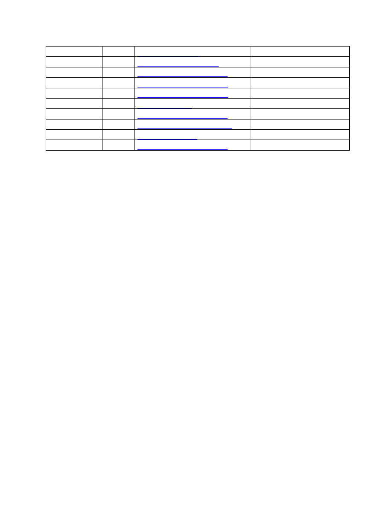
94
Smith
Anne
annesmith@vims.edu
VA Clean Marina Program
Smolnik
Matthew
msmolnik@isleofwightus.net
Isle of Wight County
Stephenson
Peter
Pstephenson@smithfieldva.gov
Town of Smithfield
Stewart
Sarah
sstewart@richmondregional.org
Richmond Regional PDC
Swets
Brian
bswets@CityofChesapeake.Net
City of Chesapeake
Swords
Janet
jmswords@cox.net
Thompson
Denise
Denise.Thompson@norfolk.gov
City of Norfolk
Vest
Deborah
Deborah.Vest@poquoson-va.gov
City of Poquoson
Walker
William
benabill@yahoo.com
wetlands board
Wyne
Kevin
Kevin.Wyne@poquoson-va.gov
City of Poquoson
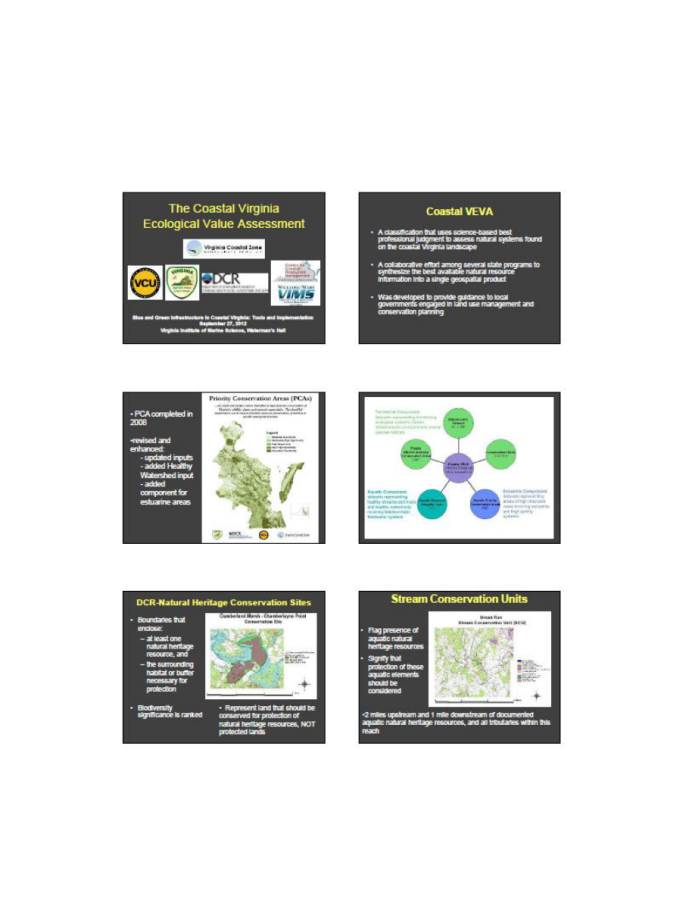
95
Presentations
The following presentation was given by Jason Bulluck, Virginia Department of Conservation and
Recreation, Division of Natural Heritage.
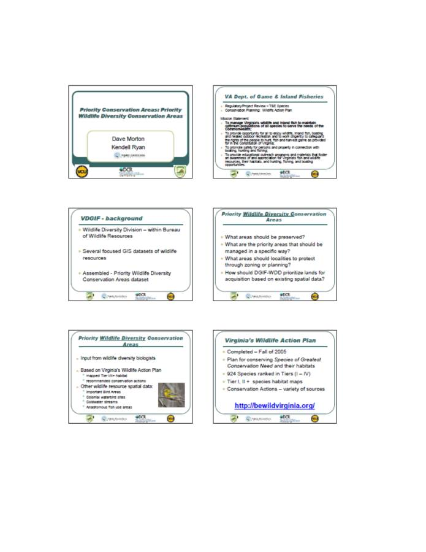
98
The following presentation was given by Lenée Pennington, Virginia Department of Game and Inland
Fisheries.
101
Marcia Berman, Program Manager for the Comprehensive Coastal Inventory at the Virginia Institute of
Marine Sciences also presented, using the same slides that are in Appendix F.